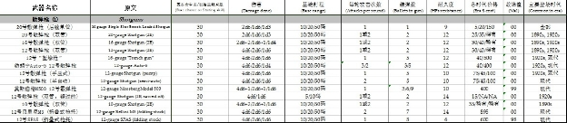
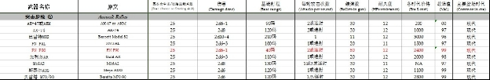

这是一份PC专用的整合手册。感谢以下翻译了COC第六版规则书的各位。
介绍——翻译：凉凉。
调查员作成：
如何制作一名调查员——翻译：清水
调查员属性——翻译：foxmuldery（Visionary VOL9）
调查员属性鉴定——翻译：foxmuldery（Visionary VOL9）
背景——翻译：foxmuldery（Visionary VOL9）
职业——翻译：foxmuldery（Visionary VOL9）
技能——翻译：foxmuldery（Visionary VOL9）
调查员的年收入和资产
范例：哈维·沃尔特——翻译：foxmuldery（Visionary VOL9）
规则：
移动与时间流逝——翻译：凉凉。
行动——翻译：凉凉。、清水
物理伤害与治疗——翻译：凉凉。
战斗——翻译：凉凉。、清水
伤害规则——翻译：红色阿朗、校译：玖羽、幻影(2009.03.26)
战斗规则——翻译：红色阿朗、校译：玖羽(2009.03.26)
火器规则——翻译：红色阿朗、校译：玖羽(2009.03.26)
魔法——翻译：ft5022255
正常与疯狂：
正常与疯狂的介绍——翻译：幻影(2009.02.26)，校译：玖羽(2009.02.27)
疯狂——翻译：幻影(2009.02.26)，校译：玖羽(2009.02.27)
疯狂的治疗——翻译：幻影(2009.02.26)，校译：玖羽(2009.02.27)
表单：
伤害奖励表——翻译：foxmuldery（Visionary VOL9）
对抗表
身高体型对照表
1890年代物价表——翻译：redsep
1920年代物价表——翻译：redsep
现代物价表——翻译：redsep
Word各年度物价表（2楼）：http://www.goddessfantasy.net/bbs/index.php?topic=46816.0
近战武器列表——翻译：玖羽
手枪、霰弹枪列表——翻译：玖羽
步枪、突击步枪列表——翻译：玖羽
冲锋枪、机枪列表——翻译：玖羽
爆炸物、重武器及其他武器列表——翻译：玖羽
对于武器列表的说明——翻译：玖羽
Excel全武器列表：http://www.goddessfantasy.net/bbs/index.php?topic=47686.0
克苏鲁的呼唤是基于Howard Phillips Lovecraft的著作改编的恐怖角色扮演游戏。
The Roots of Play游戏的本质
这个游戏是pc和kp相互协作的游戏。
游戏规则使游戏世界容易理解，定义什么可以做什么不可以做，并且提供一个客观的成功和失败的判断。
Players玩家
玩家有义务按照自己创造的调查员的能力和个性来扮演。这是角色扮演游戏的重点。
The Keeper守密人
守密人有责任毫无偏见的准备剧情。
成为一个kp 你需要阅读调查员做成，游戏系统（规则和技能），理智和疯狂，魔法和神话。
Purpose of Play游戏目的
这个恐怖角色扮演游戏的目的是玩的开心。
这个游戏也是描绘拉夫克拉夫特Lovecraft关于人性的黑暗哲学的一种方法。
Cooperation合作
这是个社交游戏。
不管调查员是否合作，玩家应该相互合作。
玩家和守密人也需要合作。
如果调查员们做的刺激的事情既时髦又令人难忘，kp和pc同样赢了。
Expectations and Play期望和游戏
克苏鲁的呼唤在感觉和动机上和其他角色扮演游戏不同。在许多那种游戏当中，pc 可以直接面对或者尝试摧毁障碍或敌人。在克苏鲁的呼唤中这个战斗策略大部分会导致一场灾难。大部分来自于群星之间的怪物是如此的恐怖,并且经常不可阻挡，以至于对调查员来说选择战斗基本上是最可怕的结局。对那些不可名状的恐怖存在哪怕是仅仅的匆忙一睹都会使人陷入疯狂，那么pc 们能做什么？
Accumulate Information收集信息
首先调查员能应该判定到底他们要面对什么。这可能涉及到去图书馆，和当地居民打交道，试图得到相关的杂志或者相关者的日记或笔记，权衡事件的报告，甚至是从神秘的书籍中得到帮助。如果觉得目前很安全的话，可以考虑分成小组去不同的地方调查。
报纸和日记经常有相关信息。图书馆，报纸文献，国家和当地的出生死亡记录表，社会历史，医院和学校，个人医生和律师，牧师或神父，秘密组织就比如商业团体—在其他的什么之中—可能会在回想中提供一些重要信息来保命。不要过分担心去观察你认为正确的地方:好好注意你的守秘人会不会骰暗骰
出版的模组经常会包括清单，摘要，报表，书信或者其他资料给玩家学习和翻译。这些资料经常包含线索或者是重要信息—不然他们不会被拿出来
仔细的询问居民并且对调查员遇到的每一个npc友善。仔细思考他们说了什么。即便他们现在什么都不知道，但是将来他们也许会帮助你们。当探究超自然现象的时候，调查员们应该谨慎的前进并且和其他人组成同盟。因为那里什么都可能出现。
At The Scene在场景中
当调查员们处于调查的场景中，应该仔细梳理这片地方来寻找线索，搜寻桌子和裙子，检查衣物和受害者的所有物，试着想象事件发生的真实图像。如果有重要线索可以被找到，守秘人应该耐心的回答玩家的询问，处理他们的技能投点。如果什么都没有，守秘人应该如实告知他们。不过，那些询问和回答的方式和措辞很重要。
当在某些可能危险的地方时请保持警惕并且一直待在一起：那些邪恶或者恐怖的“什么”会回归。如果“什么”真的回归或者说降临了，没有什么简单的方法来处理这情况或者说掌控“什么”，不要犹豫逃跑吧。你的脚就是你的伙伴。你的调查员永远可以逃走之后再回来。
Make A Play制定计划
当你理解现状后，为解决问题制定一个计划。新手招架可能无法推测危险到底有多危险和难以面对—每个有经验的守秘人可以通过调整难度来符合玩家的能力，除非他事先声明过这个难度超出了玩家的能力。
如果灾难和无法抑制的恐惧强烈的动摇了团体，他们可以尝试逃脱并保留这个模组作为"一个不被提及的秘密故事"如果守秘人同意玩家可以在觉得自己已经足够强大来处理这个事情的时候继续这个模组。当然守秘人有权利加强怪物增加难度。毕竟，恐惧和邪恶拥有更多的时间成长。
Use Your Head动动你的头脑
最便宜和最安全的获得胜利的方法是作用你的智力。在大多数出版模组里面，肯定会存在一条供调查员解决问题的途径，并且只需要很少或者根本不需要物理战斗，虽然理智可能会受到威胁。
从经验来说，用物理攻击追击那些已经进行过物理攻击的人，或者依靠反复重复手稿上的词语，击碎通道口中的镜子，熔炼恐怖的雕像，等等。如果调查员查明可怕的恶魔栖息在古老的弯曲的矿坑里，他们不需要再次爬下去并且被吃掉或者被这种情景打击到永久疯狂。他们可以一把火烧了支撑架，炸毁通道，或者把混凝土从开口灌进去，埋葬这恐怖和威胁，或许是永远。
Different Investigators类型不同的调查员
有调查员专家吗？一个可以操控的种类是一个智慧的老教授，他懂外语，读过神秘的手稿，拼凑出过心灵震爆的咒语，并且有能力在那些elder horrors出现的时候把他们送回去。他在战斗发生时没有多大用处，一般理智很低。
一个相反的种类是个坚强的可以很好的用拳头和枪战斗的行家。他可能把可怕的神话留给其他人并且作为（不懂怎么翻译）保镖或者调查员。他可能对警察和黑帮很有帮助。
这里还有其他的可以做些什么的调查员类型。他可能更会开车，或者驾驶飞机，他擅长机械维修和电子维修，并且对开锁开锁简直像个巫师。当然还有一种类型是街头的聪明人，他知道城市里所有的流浪者，并且拥有灵活的口舌和别人保持良好的关系。
所有的种类都是被推荐的，没有探索者可以学会所有东西或者是为所有情况作准备。他是他们可以在这个小组里保持平衡，并且在冒险里互补缺陷。
Multiple Investigators多个调查员
知道没有人可以做所有事情当然意味着调查员尽可能的多，但是守秘人可能会不情愿处理一大群调查员短跑过来，仔细查看所有东西并且同时询问成打的问题。
尽管有些玩家很厌恶同时扮演一个以上的调查员，但是有些人可以毫无困难的同时扮演两到三个调查员。如果守秘人愿意并且你真的想，每个玩家可以操作两个调查员。
这拓宽了技能池和经验，可以使玩家在一个调查员陷入疯狂或者是受到严重伤害时依然可以和大家一起行动。并且如果（如果有危险威胁着没有什么是应该做的）调查员小组分开了—"当我们进入洞穴的时候你们在外面守卫着！"—然后属于一个玩家的两个调查员可以分别在两个地点，可以拥有和所有人一起游戏的优点。（不会）这是他们为什么厌烦来到第一个地点。
Avoid Gunfights避免枪战
每个玩家团体有自己的感觉和习惯。如果黑帮和外国间谍在模组里面很常见，那么调查员们可以隐蔽的携带武器防身。在1990年毁灭性的武器的数量特别是随身手枪的需要一直在浮动。另一方面，在一个调查员吧他的大部分精力都用来学习可佈的克苏鲁神话的秘密的模组中，枪的唯一用途大概就是在面临永久疯狂的危险时射杀自己。
想尽一切办法拥有大量的火器，但是不要依赖它。大部分强力的怪物不会被枪，爆炸或者同类的伤害到。他们是真正的从外太空来的时空和我们很不相同的怪物。如果计划是用枪射击他们直到死亡，这个计划不会成功。先试试其他方法。
枪声齐鸣会引来警察（后面不会）。如果调查员在没有第一时间使必要的警察相信自己就突然暗杀了当地犹格 索斯托的牧师，他们很可能被质疑和逮捕，并且很快就被证实有谋杀罪，很可能死在死囚牢房。更进一步，善于观察的守秘人可能会注意到玩家对困难的反应是不是杀出一条路出来。很多东西会随之改变。三到四个yig 的信徒可以很好的证明什么是玩家无法处理的。无论克苏鲁的呼唤中还是在现实世界，枪都是致命的，避免使用它们。
1、决定角色属性
找一张空白的调查员表纸。确定与游戏的年代相对应。在空白处写上你的名字。
·投3D6各一次来决定角色的力量（STR）、体质（CON）、意志（POW）、敏捷（DEX）和外貌（APP）。
·投2D6+6各一次来决定角色的体型（SIZ）和智力（INT）。
·投3D6+3来决定角色的教育（EDU）。
·理智（SAN）等于意志（POW）x5。
这些数字是你的调查员的骨架。注意通过解释你投到的这些属性来使你的调查员角色更加丰满。
2、决定属性鉴定
·灵感鉴定（Idea roll）= 智力（INT）x5。
·幸运鉴定（Luck roll）= 意志（POW）x5。
·知识鉴定（Know roll）= 教育（EDU）x5。
·将力量（STR）和体型（SIZ）相加，在伤害奖励表找到对应的骰子鉴定。
伤害奖励表简版：
13-16 -1D4
17-24 0
25-32 +1D4
33-40 +1D6
·输入99在99-克苏鲁神话技能栏，这是你的调查员的理智点上限。如果你的调查员获得了克苏鲁神话技能点，这个值降低同等的点数。
3、决定由属性导出的属性点
·将体质（CON）、体型（SIZ）相加来决定你的生命值（Hit Points），将小数向上进位。
·你的最大魔法值（Magic Points）等同于你的意志（POW）。
·你的理智点（Sanity Points）等同于你的理智（SAN）。理智点会有所上升下降，但是你的理智（SAN）不会改变，除非你的意志（POW）改变。
4、决定职业与技能
A、找到对应的年代的调查员收入，投1D10：你的调查员有骰子数对应的钱和财产。
B、选择一个你认为与调查员的属性以及收入想对应的职业。你可以从样本职业列表中选取，或者和你的KP商量创造一个新的职业。
将你的调查员的教育（EDU）*20得出你的职业技能点，这些技能点只能分配给你列在你职业上的技能。一个技能最多只能加至最高99点。
C、将你的调查员的智力（INT)*10得出你的兴趣技能点，这些技能点可以加到除了克苏鲁神话技能以外的任何技能上。
将每一点技能点都分配掉，未分配的技能点将会消失。
不是所有的技能都需要分配点数。一个70%或80%的技能可能比两个35%或40%的技能更有价值。
5、决定武器
·近战武器中你自动拥有4种肉体攻击（拳击、头撞、脚踢、擒抱）。除非你的调查员的伤害奖励是0，加上这个值到你的近战武器伤害。
·剑和拳击是近战武器；手枪和霰弹枪是火器。
·火器可能取决于你调查员所处的年代。
·加给特定火器的技能点也自动加給该火器对应的技能类别以及其他同类别的武器。
·详细武器资料请查看“表单”中的各种武器列表。
6、决定额外背景
有些时候，如果需要，你可以写下你的调查员的大学和学位，以及生日。
·标记、伤疤和精神疾病可能来自于你的游戏过程。
·一名调查员的最小年龄为教育（EDU）+6岁。你每大于这个岁数10岁，+1教育（EDU）以及分配额外20点职业点数。
当超过岁数40岁时，每超过十年，选择1STR、1CON、1DEX或者1APP减去。
力量STR（Strength）
力量表示了调查员肌肉的力度。用它可以来判定他们能搬、推、拉多沉的东西，或者多紧的抱着什么东西。这项属性对于盼望调查员能施展强力的徒手攻击伤害非常有用。当力量减到0时，一个调查员便是残废，甚至无法离开他的床。
体质CON（Constitution）
这个包括了身体素质，活力和精力。体质也可以帮助推测调查员能够在溺水或者窒息中坚持多久。毒药或者疾病有可能会立即对体质进行一次挑战。高体质的调查员也往往有着高生命值，更容易在伤害和攻击中存活下来。严重的身体伤害和巫术攻击可能会损失体质。当体质到了0时，调查员就死掉了。
体型SIZ（Size）
体型是用一个数字来衡量人物的高矮胖瘦，从越过什么头上看东西，或者穿越一个狭小的通道，甚至用于衡量躲在草地中谁的头会露出来，都是运用体型。体型对生命值和伤害奖励都有帮助。只有很少的可能会减少体型，那就是减少肢体……比如说截肢。如果一个调查员损失了所有体型，那么他消失了，只有上帝才知道他在哪里……
智力INT（Intelligence）
智力代表了这个调查员的学习能力，记忆力和分析力。以及他对周围事物的认知。为了帮助形容不同的局势，守秘人会将智力乘以各种倍数然后丢D100，要求检定结果等于或者小于这个数字。智力乘以5，是灵感。非常的常用。想了解更多就往后看。
困难的概念，计划和灵感暗示会可能会要求将智力乘以1或者2，然后D100要求低于那个难度等级。这种鉴定可以判定调查员是否能得到更多的信息或者情报。
一个没有智力的调查员就是白痴。
智力直接影响了一个调查员兴趣技能点数的多少，还有他们学习克苏鲁咒语的速度。
如果智力的数值跟玩家的角色风格不相符合，这里还有个机会帮助扮演：那既是高教育低智力，或者低教育高智力。前者是知道理论但不足了解现象的学者，后者是刚到大城市的农场男孩。
意志POW（Power）
意志代表了意志力。意志越高，魔法值也就越高。意志并不代表领导力，后者只是扮演的问题。一个没有意志的调查员就像一个僵尸一样，而且不能使用魔法。除非特殊的情况，否则意志的损失都是永久的。
意志乘以5得到的是幸运。这个数字也刚好等于角色的理智属性。魔法值，并不像意志值，是会不断地恢复的。普通人的意志值很少会有变化。
如果他能够熟练的使用某种克苏鲁巫术，便有可能增长他的意志值。守秘人要特别浏览p101的那个表格。
敏捷DEX（Dexterity）
拥有高敏捷的调查员更快，灵巧，身体更加柔软。守秘人可以过一个敏捷鉴定判断他是否能抓住空中落物。或者在强风以及冰上保持平衡。完成灵敏的动作，或者不像被人注意到。就像其他属性一样，敏捷的难度鉴定也源于守秘人挑选不同的倍数乘以敏捷值。一个没有敏捷的调查员非常的不协调，不能完成很多动作，也无法使用幸运鉴定。
在战斗中，高敏捷的角色先行动，而且有可能在敌人攻击前缴械或者使其失效。
敏捷乘以2也就是闪躲技能的起始值。
外表APP（Appearance）
外表表现了外表的吸引力和友好。外表鉴定在社交场合和给异性留下深刻的第一印象非常有用。外表还会影响快速交谈和议价鉴定。不过第一印象不见得会永久的持续不变。外表只代表你从镜中看到的一切，而与领导力和魅力没有关系。一个没有外表的调查员（狐狸注：狂寒）是长得非常后现代主义外加野兽派，而且会到处吓人。
教育EDU（Education）
教育代表了调查员的通过学校学习的知识。教育直接影响了调查员的职业技能点数的多少。教育乘以5便是知识鉴定。教育乘以5也是一个调查员起始状态下的母语的技能点数。
一个没有教育就像一个初生的婴儿，或者是对世界没有半点认知，失忆症患者。
教育达到12代表了高中毕业生的教育水平。如果高于12，则表示有一些大学生活了。教育达到16就可以拿到学位了。一个教育很高的调查员不见得非要上学，但是一定是严谨系统的学习过。
理智SAN（Sanity）
理智等于意志乘以5。理智是派生属性，但它是游戏的重点和核心部分。理智有几个相关概念：理智，理智点，最大理智值。理智点会发生变化，但是理智不会发生变化。
一个调查员最大的理智点绝对不可能超过99。理智点为99代表了人类最坚强的意志，已经达到了接近于“钢铁意志”程度。相反，一个理智只有30的人则更容易被打击，刺激乃至发疯。绝大多数的怪物和超自然时间都会让玩家丧失理智点，就连法术也必须用理智点为代价才能得以施展。
当技能检定不适合时，鼓励守秘人运用相应的属性进行检定，或者是所有调查员都接受的某种方式。
属性改变的规则
如果角色属性得以改变，那么灵感，幸运和知识也会立即得以改变。同样的，当相应的属性改变后，生命值和伤害奖励也会随之而改变。
魔法值不会立即改变。如果存在了超出的点数，他们必须在最大魔法值等于意志时使用掉。
灵感鉴定Idea Roll
当没有什么技能鉴定比较合适的时候，可以用这个鉴定来解决问题。例如：调查员是否能观察或理解他们所见到的事物？一个普通人是否会感受到一次特殊的召唤或者某个地点？是否有什么东西在山的另一头？
将侦查技能留给那些不会立刻明白的特定线索或物品。当与人交往的时候仍然需要运用心理学。
幸运鉴定Luck Roll
调查员是否带来什么特殊的装备？他们哪个是空鬼（一种怪物）选择攻击的目标？调查员走上的楼梯是否会突然碎裂，或者是发生地震？幸运鉴定就能快速的得到答案。
幸运便是一项能力能使你在正确的时间呆在正确的地点：往往在紧急时刻使用它，特别是当守秘人希望调查员能有更高的机会通过，在仅用常用的跳跃和闪躲检定之上。
知识鉴定Know Roll
所有人都了解一些不同方面的知识。这个知识检定表现了调查员大脑中储存的，能够提供各种信息的可能性。
调查员可能明白如何将硫酸倒入水中，或者将水倒入硫酸中（不管她是否学过化学），或者他可能知道西藏的地理信息（而不需要地质学检定），或者了解蜘蛛有多少只腿（哪怕只有一点生物学）。
辨认俗语俚语便是知识检定的一个绝佳的应用。
因为没有人可以知道一切，知识检定永远不能到达99，哪怕一个调查员有21点教育。
伤害奖励Damage Bonus
所有的生物都有伤害奖励。这个词语可能会造成困扰，因为“奖励”实际上可能会导致减少，但是这个概念实际上很简单：巨大，强壮的生物平均比矮小，瘦弱同类造成更多的物理伤害。
通过将力量（STR）和体型（SIZ）相加，并和伤害奖励表对比来决定伤害奖励。每一阶的结果与一个一定的骰子或者骰子数相关。在近战中，将这个骰子加入到角色所有的攻击中，不管是使用天生武器像拳击，或者一个人造武器像是一个棍棒，小刀，并且不论是攻击一个敌人或者一些物品（比如门）。
·投掷武器，只加上投掷者伤害奖励的一半。
·不要把伤害奖励加到任何火器或者跟使用者力量与体型无关的攻击方式上。
·守秘人不能把伤害奖励加到“咬”上面。
·出于简易化的原则，守秘人可能会忽略玩家的伤害奖励。怪物的伤害奖励和平均伤害也都会给出在规则之中。
生命值Hit Points
所有的生物都有生命值。将体质与体型相加除以二，然后小数向前进位，便得到了生命值。
当一个调查员受到了伤，用铅笔在玩家表上把他的生命值圈出来。永远先造成生命值伤害再造成任何体质伤害。损失的生命值自动恢复的速度为每个游戏周1D3点生命值。紧急使用急救或者医疗技能能够立即恢复1D3点生命值。
当生命值跌到2点或以下，这个角色便昏迷了，而且不能对游戏作出任何影响。
当生命值跌到了0点或以下，除非能在下一回合结束前，这个角色至少提升到1点以上生命值，否则便死去。详细的看p68和p71页的急救和医学技能。
魔法值Magic Points
调查员的魔法值等于他的意志。魔法值因为使用咒语或者在对抗邪恶的影响中而丧失。魔法值可以自然的回复：按照24小时全恢复的比例恢复，即每小时回复1/24最大魔法值。
当一个调查员的魔法值到达0的时候，他或者她会变得像被吸干了一样。（狐狸：寒。）而且会昏迷到至少有一点魔法值存在的时候。
当意志值减少的时候，魔法最大值减少，但除非使用魔法值，否则魔法值不会减少。但它恢复时只能恢复到新的最大值。然而当意志值增加的时候，魔法值也会立即的增加。
属性的那些数字（包括属性派生出来的数字）组成了调查员的基本信息。绝大多数让调查员变得有趣的点子和能力是一个选择的事项，并非骰子的结果。
检查你的调查员人物卡寻找有用的背景，任何历史都是对灵感有帮助的。
调查员的性别
调查员可以是男性或者是女性。没有任何一条游戏规则区别了这两者；也没有某个性别有任何的优势或者劣势。一些已经出版的模组也许要考虑到某种性别在某种特殊社群众的影响，但是如果大家希望的话，守秘人可以自由的忽略所有这些规则。
姓名和年龄
调查员的姓名是任何玩家觉得有趣合适的。年龄的选择要受到调查员的教育（EDU）的影响。
学校和文凭
玩家可以加入任何愿意的学校。任何学校和文凭应该与调查员的教育值相符合，除非调查员是一个骗子。应该选择玩家喜欢扮演的种类。
出生地
选择调查员的出生地。没有游戏惩罚或者奖励某个特定国家或者民族。出生地的主要影响在于：举个例子：一个出生在美国的调查员理所当然应该说一口好英语作为他的母语。而一个出生在魁北克的调查员也许会在出生后学习法语，一个出生在亚利桑那州的可能会学习西班牙语或者纳瓦伙语（狐狸注：北美纳瓦伙族印第安人的土著语言），而一个出生在三藩市的可能会说广东话。
标记、伤疤和精神疾病
如果一个调查员的背景故事里有什么对他造成身体的改变或者心理创伤，就应该被记录下来。除非是损失了一只手，腿或者眼睛什么的，不然这些不会对游戏过程造成什么影响。设计这些时需与守秘人进行商量。
图片
如果你愿意，自己画或者请个朋友画出你的调查员的头像，或者从杂志小说中找出类似的脸孔。这在介绍调查员给其他玩家的时候相当有用。即使一个小图片也能说明很多。1920或者1930年代的电影明星也是非常合适，无论是哪个区域的。
古玩收藏家——艺术，议价，手艺，历史，图书馆使用，其他语言，侦查，其他任何一种个人或专业的技能
艺术家——艺术，手艺，快速交谈，历史，摄影，心理学，侦查，其他任何一种个人或专业技能
运动员——攀爬，闪躲，跳跃，武术，骑术，游泳，投掷，其他任何一种个人或专业技能
作家——历史，图书馆使用，神秘学，其他语言，母语，劝说，心理学，其他任何一种个人或专业技能
牧师——会计，历史，图书馆使用，聆听，其他语言，劝说，心理学，其他任何一种个人或专业技能
罪犯——议价，乔装，快速交谈，手枪，开锁，潜行，侦查，其他任何一种个人或专业技能
业余爱好者——艺术，手艺，信用，其他语言，骑术，散弹枪，其他任何两种个人或专业技能
医生——生物学，信用，急救，拉丁文，医疗，药剂学，心理分析，心理学，其他任何一种个人或专业技能
流浪者——议价，快速交谈，隐藏，聆听，自然历史，心理学，潜行，其他任何一种个人或专业技能
工程师——化学，电器维修，地理学，图书馆使用，机器维修，操纵重型机械，物理，其他任何一种个人或专业技能
艺人——艺术，信用，乔装，闪躲，快速交谈，聆听，心理学，其他任何一种个人或专业技能
农夫/伐木工——手艺，电器维修，急救，机器维修，自然历史，操纵重型机械，跟踪，其他任何一种个人或专业技能
黑客/顾问——电脑使用，电器维修，电子学，快速交谈，图书馆使用，其他语言，物理学，其他任何一种个人或专业技能
记者——快速交谈，历史，图书馆使用，母语，劝说，摄影，心理学，其他任何一种个人或专业技能
律师——议价，信用，快速交谈，法律，图书馆使用，劝说，心理学，其他任何一种个人或专业技能
军官——会计学，议价，信用，法律，领航，劝说，心理学，其他任何一种个人或专业技能
传教士——艺术，手艺，急救，机器维修，医疗，自然历史，劝说，其他任何一种个人或专业技能
音乐家——艺术，议价，手艺，快速交谈，聆听，劝说，心理学，其他任何一种个人或专业技能
心理学家——人类学，历史，图书馆使用，神秘学，其他语言，摄影，心理学，其他任何一种个人或专业技能
飞机轮船驾驶员——天文学，电器维修，机器维修，领航，操纵重型机械，物理学，驾驶，其他任何一种个人或专业技能
警方侦探——议价，快速交谈，法律，聆听，劝说，心理学，侦查，其他任何一种个人或专业技能
警察——闪躲，快速交谈，急救，格斗，法律，心理学，以下任选两种：议价，汽车驾驶，武术，骑术，侦查
私家侦探——议价，快速交谈，法律，图书馆使用，开锁，摄影，心理学，其他任何一种个人或专业技能
教授——议价，信用，图书馆使用，其他语言，劝说，心理学，以下任选两种：人类学，考古学，天文学，生物学，化学，电子学，地理，历史，法律，医疗，自然历史，物理
士兵——闪躲，急救，隐藏，聆听，机器维修，来复枪，潜行，其他任何一种个人或专业技能
发言人——信用，乔装，闪躲，快速交谈，劝说，心理学，其他任何一种个人或专业技能
部落成员——议价，聆听，自然历史，神秘学，侦查，游泳，投掷，其他任何一种个人或专业技能
狂热者——藏匿，隐藏，图书馆使用，劝说，心理学，以下任选两项：化学，电器维修，法律，药剂学，来复枪。其他任何一种个人或专业技能
技能的定义包括了常见的涵义，然而一些新的情景会使技能增加一些新的用处和解释。和你的守秘人一起探讨技能特别的用途。
每个技能后括号里的数字代表了这项技能的基本成功机率。
技能表示一个领域所知的部分，但是技能的百分比并非代表了整个领域所有知识的了解的百分比。如果真的要针对某个技能进行比较的话，一个生活在2002年的拥有60%物理学技能的物理学家要比一个生活在1902年拥有90%的物理学家要懂得多的多。
一般来说，一个调查员可以通过自己超过50%的技能来取得收益了。如果一个调查员在某个技能上得到提高了，守秘人可以给他增加新的工作，提升他的工资。
Accounting会计学10%
对于会计有关的事务有着一定的了解和知识，对人或者商业事务施展经济手腕。可以按照记载的资料，可以从中发现欺诈的员工，siphoned-offfunds，贿赂或者勒索的款项。也可以发现某企业是否是像它所宣称的获益或者亏损。通过翻查旧的账簿，可以发现它到底在过去赚或者赔了多少钱（谷物，人口买卖，走私酒类），以及钱给了谁，和制定了什么样的贸易合同。
Anthropology人类学1%
可以让使用者通过一个人的行为来鉴定，判断和理解他的生活方式。如果技能的使用者长时间的研究某种文化，或者钻研一种关于近于灭绝的文化的详细资料，则可以了解这种文化基本的行为方式和道德观念，哪怕资料并不完全。如果钻研某种文化达到一个月以上。则可以说出那些文化的一些习俗，如果再加上心理学的应用，则可以预知某种文化下的人的行为和典型思维。本质上是对于现存的人类文化比较有用。
Archaeology考古学1%
允许鉴定出古代物品的年代和真伪，并对其作出评价。如果仔细检查一个地点或者某件物品，可以推断出这物品的用途和一些使用者的生活方式。考古学也可以帮助鉴定出已消亡种族的语言书写格式。
Art艺术5%
特定的音乐，乐器，绘画，厨艺等等——一种一个具有创造性的人可能会耗其一生的追求。如果检定成功，则表演者或者其作品是赏心悦目的，而其会让观众感到惬意。而如果失败，则表示这位艺术家表达不当或者无法合适的表现自己的想法。拉夫克拉夫特认为的艺术，让人想起传统的缪斯女神，但是守秘人可以拓展“艺术”的定义。到底哪些归结为艺术，而哪些归结于手工则由每个守秘人自己决定。在玩家卡上有不少的空位可以填写具体的艺术门类，玩家需要自己著明方式和手段：歌剧演员，油画家等等。
Astronomy天文学1%
使用者知道或者知道如何找出是哪个行星会在某个特定日子或晚上的时间里将会出现在天上，什么时候会有日食或者月食，流星雨，重要的星球的名字，对现时外星生命体的了解，银河系的结构和构成物的等等知识。一个天文学教授可以推算出天体的轨道，运行周期和（现代）一些特色的比如红外线天文学或者甚长基线干涉测量.
Bargain议价5%
能让你就某物谈到可以接受的价格的技能。要议价的人必须说出他所希望的价格，而这个价格与原价每差2%，则议价技能便减一。不管你的口才有多少，销售者是肯定不会吃亏的.守秘人常常会秘密的决定一个价格底限。
例子：
哈维·沃尔特在德国买了一把霰弹枪，准备在调查他仆人科特在某古老遗迹旁失踪的事件时带在身旁。店主开价100美元，然而哈维的资金有限。他要求七十美元成交，然后哈维的玩家进行了一次D100检定，哈维的议价技能是20%，但他要求了30%的折扣，所以成功率减去15%，变成了5%，玩家丢出了22——失败了。之后哈维又开价80美元，提升成功率到10%，玩家这时丢出了02，成功的以80美元买到一把霰弹枪。
同时，这个技能用在任何牵涉到涉及价位改变的谈判中，和信誉度，快速交谈或者说服技能一起使用可以帮助议价。一畅简单的议价可以在几分钟内完成，然而复杂的可能长达数周，议价技能也可以跟法律技能综合运用。
Biology生物学1%
关于生命的科学，包括了植物学，细胞学，生态学，遗传学，组织学，微生物学，生理学，动物学以及其他类似的学科。调查员的理解能力应该反映出游戏的时代。一个人可以运用这个技能来制造出某种令人恐惧的传说中的病毒的疫苗，或者隔离某些热带丛林的致幻效果。
Chemistry化学1%
研究事物的构成物，温度，能量和压力对它的影响，以及他们如何相互影响和反应。使用化学技能，一个人可以制造和分析复杂的化学物，包括了简单的炸药，毒药，瓦斯和酸液，这要求至少一天和合适的器材和化学试剂。使用者也可以在拥有合适的器材和试剂的情况下，分析一种未知的物质。
Climb攀爬40%
基于守秘人判断的攀爬的困难程度，每上升10到30英尺就需要做一次攀爬检定。如果情况如同坚固的表面，大风，能见度，下雨等等，都视为判断的元素。如果调查员想安静的攀爬，则必须要同时通过一个攀爬和潜行的D100检定。如果攀爬成功而潜行检定失败，则他或她成功的爬上去了，然而却制造出了不少声音。如果攀爬失败而潜行成功，他或者她摔了下去，但是没有吸引任何注意。
Computer Use电脑使用1%
使用一般的微机和商业软件并不需要做这个技能的检定。只有特殊的电脑系统才需要对此进行鉴定。
一项现代的技能，电脑使用允许调查员编写计算机程序来达到自己的目的：也许要编写新的程序，检索和分析难解的资料，侵入安全系统，探索复杂的网络，或者发现或开发程序，后门和病毒。
这个技能每次使用都需要耗费半天以上，而且也许需要不止一次的检定。守秘人必须判断真正的要求和结果，而且可能需要在合适的时候做出密投。当进入网络以后，也可以使用图书馆应用这项技能。
Conceal藏匿15%
允许视觉上的掩饰和保密，可能运用垃圾，衣物或者其他媒介，或是其他可以误导他人的材料，来伪装一个或多个物体。也可以制作秘密的嵌板，小隔间，或者是通过重新上色来改变物品特制来躲避侦查。
通过使用这个技能，可以逃过视线，但不能用伪装来逃避哪怕不经意的一瞥。任何大件的物体会加大这个技能的难度。比大象还大的东西不应该只由一个人来藏匿，而可能是一个小组。
与隐藏技能综合应用。
Craft手艺5%
手艺是专门的技能，用来制造维修特定的东西或者达到某种良好的效果。这需要手工的灵巧和工具的实用性。作为一种职业，手艺能够比劳动赚取更多的钱，然而不及专家。
有很多的手艺，从油漆工到驯兽师到窃贼。玩家卡上详细列出每一项手艺技能，就像艺术技能那样：手艺（鞋匠）、手艺（理发师）或者是手艺（吹真空管）。
制作或者修复物品需要工具和时间，需要的话则由守秘人判定。当检定极低的时候，手工者可以制作出无比华丽的物品，而当检定失败时，表示作出的物品没有主要的功效或者无法符合要求。一个成功的手艺检定可以鉴定物品，例如得知物品是在何时何地制造出来的，发现关于历史或者技术的线索，或究竟是由谁制作出的。
Credit Rating信誉度15%
勉强的说，调查员看起来的的家境和自信的程度。也是调查员乞讨和从银行和商业场贷款的成功率，而且也是通过一个违规的支票或是虚张声势混过检查证件的几率。
在一个小城市里，或是一个狭小的社群里，比如英格兰爱德华地区，每个人都互相认识，而信誉度就如同月收入一般称为了声望的主要指标。尽管信誉度会因为丑闻或者某种个人行为而下降，但是财产的增减却对此只有微乎其微的影响。守秘人应该让角色对此有清晰的认识。
Cthulhu Mythos克苏鲁神話0%
这项技能跟游戏中其他技能都不同。没有一个起始的调查员可以把职业技能点数或者兴趣技能点数加在这项技能上。在玩家卡上，这项技能没有检定格，因为成功的使用这项技能不能提供增长这项技能的机会。
克苏鲁神话的点数来源于接触到了神话存在而陷入疯狂，了解到宇宙的真相而崩溃和阅读被遗忘的古籍和其他神话的记载。有时，目睹了某些仪式和牵扯入某些事件会提升克苏鲁神话的点数，但是这都取决于守秘人。
少数的神话点数也许是有用的，但是调查员并不想要太多，因为99减去调查员的克苏鲁神话点数等于一个调查员的最大心智点数。当克苏鲁神话技能得以提升，而心智点数就会削减，使调查员变得更加脆弱。请看心智第75页。
克苏鲁神话技能确实有其用处。当足迹或者其他的关于神话怪物证据被发现，一个成功的克苏鲁神话鉴定允许调查员辨认出怪物的本质，推断出一些关于它的行为的信息，或者它拥有着什么样的特性。一个成功的克苏鲁神话投也可能允许一个调查员回想起与与神话相关的事实，辨认出咒语当看到它被释放，回想起特定神话书中的一个特定技能或者一些信息，或者完成其他的任务。
没有人类，即使他有99%的克苏鲁神话，可以达到对神话的完全了解。很公平地说，就算是旧日支配者也达不到。他们的100%只是代表与人类可以到达的程度的简单对比，并不是一个对神话神秘性的完全了解。也许外神可以了解全部，如果它们会想这些事情的话。但是只有神可以对应无限。残酷的神话黑暗会永久地拓展。精通这些难题也只是暂时的，局部的，与虚幻的。
Disguise乔装1%
使用者通过改变姿态，服装和/或者声音来使其看起来另一人或者另一种人。戏剧般的化妆可能会有所帮助。昏暗的灯光也会有一定帮助。乔装被发现的可能性随着性别，年龄，体型，语言的改变而增加。想要看起来像某个特定的人，或者是不像某一类人，将乔装的成功率减半——这种错觉还是在远处比较有效果。
一次成功的侦查或者心理学可以让观察着对乔装的某人有所怀疑。乔装的玩家通过一次成功的快速交谈可以使前两者技能成功率各减10%。
尽管解释投骰结果是守秘人的职责，但是一个很低的D100结果可能让乔装的角色有机会骗过熟悉的人。一个失败的乔装骰会导致旁观者注意到他不正常的言行。如果是一个极高的失败，从90到00，表示了这种情形：“那个人非常可疑！赶紧调查一下！”
Dodge闪躲DEXx2%
允许一个调查员本能的闪躲暴风，投掷武器，埋伏的攻击以及其他。在一个回合里角色在场时闪躲的同时也可以选择格挡，但是不能攻击。闪躲可以通过经验来提升，就像其他技能一样。如果一个攻击能被看见，角色便可以尝试闪躲。在面对枪械的时候，防御者在每个回合只能尝试闪躲向他射击的第一发子弹。
Automobile/Horses汽车驾驶/马术20%
任何拥有这个技能的人都可以驾驶汽车或者小卡车，进行正常的使用，妥善处理常见的车辆故障。如果调查员想要甩掉或者跟踪某个人，双方都有进行驾驶检定，直到一人失败而另一人成功。如果有更复杂的追逐，则参照28页的自动驾驶规则。带有危险性的驾驶必须要求驾驶检定。
在1890年代，这项技能是马术，具有同样的益处和危险。这代表了双轮单马轻便马车和双轮货车，或是二到四轮的大马车。这时代的汽车驾驶起始值为1%，而在后时代的调查员的马术接纳能够起始值也为1%。
Electrical Repair电器维修10%
能使调查员维修或者重新装配类似于自动火花塞，电动马达，保险丝，防盗警铃等电子器械。在现代，跟电子学关系不大。如果要维修一个电子设备可能需要特殊的工具。1920年的同样工作可能要求这项技能跟机器维修同时使用。
Electronics电子学1%
可以进行故障探测和维修电子器械。允许制造简单的电子器械。这是一项现代技能——在1890年代和1920年代则是使用物理学和电器维修来处理电子器械。并不像电器维修技能，电子学所需要的配件是不能临时准备的：他们是专门被设计出来进行某种工作的。没有合适的电子晶片和集成电路板，这项技能也没有什么办法。
Fast Talk快速交谈05%
让目标在短暂的时间内同意使用者。在没有深思熟虑的情况下，目标会签署文件，允许通行，借出车辆，或者其它一些没有得到原因的行为。在得到了更多的时间来仔细的思考，并成功地通过了一个灵感检定，目标会恢复他的理智，快速交谈便失效了。
举例：冯·山姆伯爵成功地使用快速交谈，欺骗哈维走上楼去拿自己的自来水笔来签署伯爵准备的诈骗合同。在哈维找笔的这段时间里，他已经离开伯爵一会儿了，时间足以让他再好好思考这个事情。然后守秘人要求他作一次灵感检定，哈维成功了。他终于弄明白刚才发生了什么事情，然后决定不会签署这份合同了。但是伯爵可能改天再试，或者干脆改变策略，尝试说服他。
在几分钟的游戏时间里，快速交谈能让正在争议的物品变得高价，歪曲事实，或是把一个好东西说的并不值价。相比之下，说服和议价可能需要几个小时乃至几天来达成协议。快速交谈见效快，但是只能运用在少数人身上。快速交谈对于意志坚决的人并不见效，这时运用说服。
First Aid急救30%
可以让昏迷和被吓昏的同伴苏醒，固定骨折的肢体，处理烧伤溺水的成功率。除非守秘人同意，急救一般无法处理疾病或是中毒。使用急救技能可以每周恢复1D3的生命值。（如果前往医院，而且医学技能成功的话则每周恢复2D3）如果急救失败，则使用者必须等待一段时间才能尝试下一次急救（这很合理，急救失败标明你现在所能做的急救没有效果，需要新的设备），但是另外的急救者可以于下一个回合立即使用。
成功的使用这项技能可以让你马上对单一一次攻击或者伤害治疗1D3HP。在非战斗回合中，如果调查员受到了多次伤害，则可以分别对每个伤口进行急救治疗。
在当前回合或者是下一个回合，一个临死的调查员可以被救活，如果急救处理使他的生命值恢复到至少1点。
成功的急救技能判定可以立即让一个被击倒的人醒来，如果守秘人同意，也可以应用于其它昏倒的情况。
调查员对一个伤口使用了急救技能以后，进一步的使用急救或者医学技能都不再生效。一个新的伤口是完全独立的。使用这个技能需要花费一个回合，或者由守秘人判定，也参考医学技能
Fist/Punch拳击/厮打50%
顾名思义的技能，可以解释为近战的拳法，或者是空手道的劈斩，大角度的勾拳，抑或是凶暴的一巴掌等等。一个人可以使用拳击/厮打来招架踢和头顶，武术技能可以增加这项技能的效果，而击倒规则也应用于它。
Geology地理学1%
可是让调查员看出岩层大致的年龄，分辨化石的类型，鉴定矿物和水晶，找出可以安置钻探或矿采的位置，对土壤进行评估，预测火山的运动，地震，雪崩等等。夏洛克·福尔摩斯就是一个伦敦地区的土壤专家，他可以通过研究一个人鞋上的灰尘来追踪那人。
Grapple擒抱25%
擒抱是一种特殊的个人攻击，经常被用于不伤害对手的前提下制服他人。这项技能可以因为对方成功的擒抱和其它攻击而招架，但只在攻击的第一个回合适用。
如果擒抱在第一个回合成功而没有被抵消，这时攻击方抓住了对方然后可以做以下的一种行动。
以攻击方的力量来压制目标的力量，使其失去行动能力。进行力量对抗，使用对抗表格。如果成功，则目标被一直压制住，直到擒抱者尝试做其它的动作。
击倒目标，如果使用的话则自动成功。
在第一回合或是之后可以击晕目标，参考击晕规则：60页。
解除武装。在几个回合里连续的成功擒抱，可以让调查员在第一个回合阻止对方的近战武器攻击，在第二回合内抓住武器或者是拿武器的手。
对目标造成物理伤害。对方必须已经被成功的擒抱住。然后擒抱方还要在本回合内再作一次成功的擒抱检定，或者以后回合的成功擒抱检定。成功会对对手造成1D6+DB的伤害。每一次新的伤害要求新的擒抱检定，但新的伤害也要重新检定。
勒住对手。当开始施加压力的回合起，目标开始如同溺水规则般窒息。在随后的回合里攻击者无需再作擒抱检定。
在每一次造成伤害的擒抱中，受害者只有通过对抗表中的力量对抗，才能成功逃脱。如果攻击者是两人，则要在对抗中把两人的力量相加进行对抗。
Handgun手枪20%
对于所有不连续射击的手枪类武器使用。而现代的自动手枪（MAC-11，乌兹等等），连发时均使用机关枪技能进行检定。开火速度的差别部分来自于枪械的后座力和重新瞄准所耗费的时间，也来自于左轮枪和半自动手枪的区别。如果守秘人愿意，在装填和发射黑火药手枪的时候，还需要做一个历史技能检定。
Head Butt头顶10%
在酒吧打架的基本能力，头顶主要攻击对方的腹部，太阳穴，头部，鼻子，下巴或者后脑。这项近身攻击可以造成对方的剧烈疼痛。而且非常的快还具有威慑力。不能通过头顶来进行招架。但是武术技能就可以添加这一能力。也可以同时使用击倒规则。
Hide躲藏10%
与藏匿相反，躲藏更注重于避开无准备的侦查的能力。只有在追踪，监视或者巡逻时才使用。允许使用这挑选物体，灌木林，阴影等地方来隐藏自己的踪迹。某些遮盖物必须是存在的。使用者可以在一个被监控的地区边行动边隐藏。但是技能要减半。
History历史20%
可以让调查员回忆起一个国家，城市，种群乃至某人的相关意义。如果真相含糊不清则降低这成功率。成功的历史技能检定可以对于鉴定罕见的工具，技术或者是古人流行，而现在所知甚少的想法有所帮助。
Jump跳跃20%
在成功的情况下，调查员可以垂直跳起并抓到等于他身高的高度。安全的落下等于他的身高，立定跳远至身高的距离，助跑跳两倍身高的距离。当从高处落下的时候，成功的检定可以抵消因高处落下的1D6点伤害。
Kick踢25%
不管是对着鼠蹊或是下巴的直踢，还是一流的空手道飞踢，或者是卧地的双腿踢，踢无论在任何情况下都有足够的威力。踢可以用于防御，而且武术技能可以增加效果，但是一般情况下不把踢应用于击倒规则。
Law法律5%
反映为知道确切的法律，判例，合法行为，法庭程序的纪律。法律专业可以带来大量财富和政治地位的职位，但是这也要求多年努力的研习。高信誉度是非常重要的。除了法律，没有恩和专业容易被调查员所作的奇怪的行为搞臭。在美国，在法律方面的能力必须被联邦各州的司法界所承认。而在别的国家中，技能成功率要减半，除非该角色花费30减去智力来研读该国的法律。
Library Use图书馆利用25%
从很多角度來說，這是游戏中最为重要的技能。图书馆使用可以让一个调查员寻找一本指定的书籍，报纸或者其他根图书馆相关的事物，或者收集文档，确定某样物品的存在。每一次使用这样技能都需要花费不间断的四个小时，很少有调查员一天连续使用2次这个技能。
这技能可以找出上锁的箱子或者一套珍贵的图书，不过可能要使用快速交谈，说服，议价，信誉度，贿赂，或者特别的凭证来取得这些书。
Listen聆听25%
衡量调查员理解和听取声音的能力，包含了窃听对话，隔门听声，分辨咖啡厅中的细语。守秘人可以在发生情况的时候用这项技能来判定调查员们又没有发现树枝细小的折断声。广义的来说，较高的聆听值代表了调查员平时的警觉性。
Locksmith锁匠1%
使用者可以修理锁，配置钥匙，或者使用万能钥匙，铁丝以及其他工具来开锁。
特别复杂的锁会降低技能的成功率。锁匠可以用于开启车门，利用电线短路来发动汽车，敲开图书馆的窗户，解开中国的七巧板等谜题，以及侵入普通的商业防盗系统。
更改安全设置，金库，或者其他此类的防护系统。守秘人可以将这项技能与敏捷或者意志合用，以便用于各种不同的情况。
Machine Gun机关枪15%
无论是在使用双足支架或者三脚架的武器都是用这项技能。如果使用双脚架武器单发点射，而且步枪技能较高的情况下，则使用步枪技能进行判定。在现代，突击步枪，自动机枪和轻机枪的差别已经很小了。
Martial Art武术1%
与拳击，头顶，踢和擒抱技能合并使用。如果攻击骰小于等于进攻者的武术技能，则攻击伤害翻倍：拳击的伤害变成了2D3加上伤害加值。武术使伤害翻倍指的是打中了对方的要害部位，但是伤害加值始终不变。
会武术的人可以选择在被攻击前是用进攻来招架，而且不用做招架宣告。
即使你会武术，子弹或者类似的武器是无法被招架的。
人们发展武学以获得了各种强大得技艺：柔道，合气术，合气道，卡波耶拉，空手道，法式拳击，跆拳道，白鹤功夫，七星螳螂拳等等。选择其中一项或者发明一种新的。在以前，这些学派都是秘密的而且这些技艺被珍重的保存着，如果文化不通，这些技艺就鲜为人知。直到近代才有所改观。
Mechanical Repair机器维修20%
可以让调查员修理机械，或者制造一个新的。也可以作出基本的木工和铅锤测深。这项技能可能会需要一些特殊的设备。它也可以打开家中一般的锁，但是仅此而已，请参考钳工技能。机器维修和电器维修往往是相辅相成的，比如在修理复杂的犹如汽车或飞机的机械中，两者缺一不可。
Medicine医学1%
使用者可以诊断和处理事故，伤害，疾病或者中毒等等。可以作出一般的医学劝诫。如果某个时代对于疾病的处置并不发达，则效果有限，而且不确定。如果这项技能检定失败则需要使用者等待一段时间才能使用，不过另外的使用者可以在下一回合立即使用。
在紧急情况下，成功使用医学检定可以立即恢复1D3的生命值，每个伤口一次。
在同一回合或者下一回合进行成功的医学检定可以让刚刚死亡的调查员生命值恢复到+1以上的话，则可以救他一命。
如果调查员成功的使用医学技能，每一游戏周则可以恢复2D3的生命值，也包括使用技能的第一周。
包括了紧急治疗在内，医学技能最高可以在第一周恢复3D3的生命值。
成功的使用医学技能可以让被击倒或者其他原因昏倒的调查员立即苏醒过来。
守秘人可以制定哪种情形不适合进行医学处理，请参照急救技能。
History自然史10%
原本是研究在他们生态环境中动植物的学科。19世纪时，这门学科本分为了很多的学派。作为游戏中的一项技能，这代表了传统的知识，农夫，渔民，业余摄影师以及爱好者的个人观察能力。这项技能可以判别特性，习性以及栖息地和能猜出这种种类而言的重点是什么。自然史的信息可能精确也可能模糊——这是评价，判别的领域。使用自然科学可以鉴定某个马匹或者蝴蝶标本是不是价值连城。
Navigate领航10%
允许使用者在各种环境下，无论日夜晴雨，都能找到正确的方向。较高的技能代表了使用者对天文图，表，仪器和假设存在的卫星定位装置比较熟悉。骰子的结果是秘密的。调查员职能透过间接的事件才能得知。这个技能也可以用于对某一个地区进行测量绘图，无论是一个一座方圆百里的岛屿还是一个房间的内部。
Occult神秘学05%
使用者可以认出神秘学的物品，文字，观念以及能在看到的时候辨别出魔法的痕迹和神秘学的咒文。神秘学者对从埃及，苏美尔，从中世纪到文艺复兴时期的西方（或许包括亚洲和非洲）的隐秘知识比较熟悉。了解这一类的资料或许能够得到对于神秘的感知。在84页记录了一些神秘学书籍。这项技能完全不包括对于克苏鲁神话的法术，书籍，或是任何相关的事物。不过有很多神秘学观点都被旧日支配者的膜拜者所采用。
Operate Heavy Machine操纵重型机械1%
驾驶和操控坦克，锄耕机，蒸汽挖土机或者其他大型机械必备的技能。只要学会了这项技能，在驾驶重型机械的时候则除非危险事件和特殊的路况，不需要做检定。如果出现车种差异很大，也不是很熟悉的情况，守秘人可以考虑降低调查员的技能：比如一个习惯开推土机的人，不大可能很快就能操纵好船只引擎室的蒸汽涡轮。
Other Language其他语言
选择一种语言，一个人可以学会任意多数的语言。这项技能表示了使用者成功读写自己母语以外的语言的机率。像是AKLO这种古老或者未知的语言是不能选择的，不过普通的地球语言都可以。有时守秘人需要根据不同的文件与演讲制定不同的难度，而且对此进行数次判定，每增加一点难度多加一次检定。同理，守秘人也可以让使用者在类似的情况降低他们的技能值。其他语言的一次成功的检定可以包含一本完整的书籍。
如果调查员在某种其他语言有很多点数，那么他可以直接领悟谈话的要点。角色需要有智力乘以五或者更多的点数来与当地人比较技能。在玩家卡上有多余的空白处来书写各种语言。如果鉴定一种不明确的现代人类语言用知识检定，而已经湮灭了的人类语言则用考古学，如果要鉴定外星语言的话，则使用克苏鲁神话或者神秘学。
Own Language母语EDU*5%
特指婴幼儿或是年幼时使用的语言，大部分人都只有一种母语，对于美国居住的人来说，应该主要是某种腔调的英文。当选择了母语后，这项技能的起始值就为教育属性乘以5：之后，调查员就可以以这种程度来听说读写。
在通常情况下，并不需要对母语技能进行检定，如果一份文件难以理解或者利用古文书写的话，守秘人可以降低使用者的技能。
一般说来，作家的母语技能较高。
Persuade劝说15%
利用劝说技能向目标灌输某种想法，观念（类似于快速交谈，这想法和观念并非是正确的）。但和快速交谈不同，劝说的效果较为长久，有可能长达数年，直到发生某些事件或者其他人通过劝说又改变了目标的心意。要成功地使用劝说可能需要长达数小时乃至数天的时间，这在于劝说的内容。
Pharmacy药剂学1%
使用者可以认出，合成也许还可以配制各种药剂或者毒品，无论是人工还是天然的，也明了药剂的副作用和一些禁忌。她或他对于毒药和解药有一定的知识，在中毒的情况下，可以利用药剂学来进行自救。不过这个技能不能诊断疾病，或获取开医师药方的权利。
Photography摄影10%
包括了静态摄影和动态摄像。这项技能可以让你拍出清晰的照片，合适的冲洗胶卷，也许还可以发现被遮掩的细节。技能失败则会使像片模糊，或者达不到期望的目的。在现代，这项技能拓展到摄像机，录放装置和数码摄影。
Physics物理1%
包括了压力，材料，运动，磁力，电力，光学，辐射以及相关事物的理论。还包括了可以用来测试想法的仪器的知识。知识了解的程度跟所处的时代有关。如果是实用性的仪器，类似于车辆之类并不属于物理学领域。但是实验相关的仪器属于。有时会跟电子学或者机器维修技能重复使用。
Pilot驾驶1%
驾驶空/水自动载具的能力。调查员可能有不同类别的驾驶技能。在玩家卡上有每1种都是以1%为基础值。
航空器材的驾驶随时代而改变，而船只的驾驶无论是人类船只还是马达都没有变化。不佳的天气，低能见度和载具的损害都会对这项技能产生影响。
如果技能值在15%以下，则刚好足够给自己带来麻烦。如果是理想的能见度和晴朗的天气，他可以进行正常的飞行或者航行，不过在起降或者改变风帆等等时候需要作幸运检定。守秘人必须在暴风来临时，使用仪器导航，低能见度或者其他困难的时候要求其做驾驶检定。
Pilot Aircraft驾驶飞行器
对以下提到的飞行器有一定的了解。即使在陆地上，天气良好的时候，也要做驾驶检定。如果状况良好，可以把技能翻倍，如果状况不好，则维持原来的技能值。如果失败，则可能对载具造成一定的伤害，并且必须要在下次起飞之前进行维修。驾驶员和乘客可以使用逃开或者使用幸运检定以免受到严重的伤害。如果丢出00则表示了无法想象的严重后果，至少驾驶员会因此而死。
每种类型的飞行器都视为独立的技能，而且应该分别列出，由守秘人来决定。1890年代只有热气球，而1920年代有热气球，飞艇和小型飞机。现代则有小型飞机，喷气客机，大型客机，喷气战斗机，直升机等等。
Pilot Boat驾驶船只
通晓小型马达或者人力船只在风中，雷雨中，和长退潮时的特性。可以从风和波浪的起伏中辨认出暗礁和临近的风暴。在风中，新手会发现即使是停船是多么的困难。
Psychoanalysis心理分析01%
允许使用者在大约一天内暂时坚定自己的心智而不会陷入疯狂。如果这段期间情况没有发生改变，则倒霉者会复发，疯狂只有需要时间才能治愈。急迫的心理分析需要一个小时，而且不管有多少治疗医师，每一个症状只能进行一次治疗。
心理医疗师的治疗在病人疯狂期间增加病人的理智点数。参考76页。
心理医疗师不能使病人的心智点数超过意志乘以5或者99-克苏鲁神话。
这技能偏向于情绪的治疗，不过不仅仅是弗洛伊德的学说。在1890年代，正式的心理分析师非常少见，尽管有些疗程跟人类一样古老。即使到了1920年代，这个有时看起来还是像骗人的伎俩。专门研究情绪失控的心理医师或者学者统称被称为精神病学者或是精神病医师。现代以来出现了综合的医疗方式，被称为精神病治疗。
Psychology心理学5%
对于每个人来说都常见到的技能，使用者可以猜测别人的动机和性格。一般来说守秘人应该对判定的结果保密，只跟使用者说出不知对错的了解得信息。除非对方的信心被动摇，玩家不要妄想能看穿一个老练的骗子在想什么。
Ride骑术5%
驾驭上了鞍的马，驴，骡等动物的技能。如果是骆驼的话则要降低技能值。这项技能也包括了照料马匹，准备马具和如何在奔跑和碰到恶劣情况下控制马匹。如果马匹突然直立或者摔倒，骑者仍然停留在马背上的能力等于骑术的技能值。如果调查员从马背上摔了下来，无论是因为马匹摔倒，被杀或是骑术检定没有通过，都要承受1D6的伤害。如果有成功的跳跃检定则可以减少1D6的伤害。
一边骑马一边使用武器，武器技能和骑术都必须要在50%以上，守秘人可以加上各种变化以反映当时的场景。
Rifle步枪25%
使用者可以操作任何一種的來福槍，不管是都需要單發，三連發，還是半自動的都可以。當你拿軍用的突襲步槍進行各種射擊或是用霰彈槍射击步枪子弹的時候，也都是用這技能。
每一回合开火的次数因为武器的动作和后坐力而变化，而且每一次都需要重新瞄准目标。
守秘人可以判断黑火药枪枝的装填和使用需要进行历史技能检定才可以成功。守秘人也可以将步枪和霰弹枪技能合并，因为差别仅在于使用的是球状弹夹或是金属弹夹。
Shotgun霰弹枪30%
这项技能可以发射大范围武器。因为使用的是散射的钢弹，所以命中率不会因为距离而减少，但是杀伤力会因此而减。在10到20码的距离内，1D3的目标可能在同一回合内被击中；而在20到50码的距离内可以击中1D6个目标。守秘人判断哪些目标是处于攻击范围内。
双弹仓的霰弹枪是可以折叠以方便藏匿或者随身携带。但在1920年代的美国，这一类的武器是违法的。
当射击步枪子弹的时候使用步枪技能进行检定。守秘人可以决定将步枪和霰弹枪两种技能合并。差别只在弹药。
Sneak潜行10%
在不惊动他人的情况下悄然无息的移动。与躲藏技能合并使用，只用作一次D100检定，然而要求两个都能通过。只有悄然行动时才需要同时使用。也参考躲藏技能。
Spot Hidden侦查25%
这个技能可以让使用者发现秘门或者隔间，发现到不起眼的线索，察觉汽车重新上过漆。高知道埋伏，注意鼓起的口袋或者是类似的情况。这是一项非常重要的技能。
Sub-machine Gun机关枪15%
当使用冲锋手枪或者机关枪的时候使用这个技能。像是“蝎”式冲锋枪这种现代冲锋手枪，在进行单发射击的时候，因为体积很小所以也使用手枪的技能。1890年代没有机关枪。
Swim游泳25%
在水上或者其他液体上漂浮移动的能力。只有在守秘人认为出现危机的时候才需要作游泳检定。如果检定失败，则陷入溺水状态。在溺水状态下。每一个回合都可以进行一次游泳检定，如果成功则可以浮到水面上呼吸，第二个成功则可以在水里游动，但是如果第二次失败了，则再次进入溺水程序。
Throw投掷25%
向一个目标投掷物体，或者用物体某一部位向目标投掷（像是刀或者飞斧的刃部），则使用这个技能。重心正常的拳头大小的物体可以投掷3码（使用者的力量减去物体的体型）。如果这个物体就是设计来投掷的，则可以投出两倍的距离，而且可能会弹射至更远。守秘人必须给棒球或者标枪等物体设定一个合适的距离。
如果投掷失败，则物体随机掉落在目标附近。比较投出的结果和技能值的差，然后以码为单位选取一个合适的距离。
Track跟踪10%
运用跟踪，调查员可以透过树叶，柔软的泥土来追踪某人，车或是动物。痕迹形成后每过一天，跟踪的成功率就要减去10%。下雨可能让追踪无法进行。在水里，水泥地上，夜晚，除非有特殊情况说明，否则都无法进行跟踪。
1890年代：投1D10：结果1=$500+房子&膳食，2=$1000，3=$1500，4=$2000,5=$2500,6=$3000,7=$400,8=$5000,9=$5000,10=$10000
1920年代：投1D10：结果1=$1500+房子&膳食，2=$2500，3=$3500，4=$3500,5=$4500,6=$5500,7=$6500,8=$7500,9=$10000,10=$20000
现代：投1D10：结果1=$15000+房子&膳食，2=$25000，3=$35000，4=$45000,5=$55000,6=$75000,7=$100000,8=$200000,9=$300000,10=$500000
调查员拥有财产和其他价值年收入五倍的资产；一个现代的调查员投出55000美元拥有275000的资产。这些资产的十分之一存入银行当作现金。另外十分之一是股份和债券，可以在30天内转移。余下的是老书，房子或者是任何符合角色的东西。
这里示范HARVER WALTERS，一个１９２０年代纽约记者，一个神秘学和超自然学的调查员如何建立的。玩家拿出一张空白的人物卡，一支铅笔，三个六面骰，然后打开规则书到３４页。
角色属性
力量：３D6，玩家最终投出了４，一个几乎最糟糕的结果。这个后果导致这个新的调查员极其虚弱。但是这个玩家并不气馁：克苏鲁的召唤是一个非同一般的游戏－
敏捷：３D6，结果是一个１２，高于平均值，，而且导致了调查员的闪躲技能为２４％，低力量高敏捷可能使调查员要学习一些可以炫耀这优势的技能－或者他或者她可以作一个优秀的舞蹈家或者打字员。
智力：２D6+6，智力结果等于１７，一个极其优秀的结果。玩家笑了，然后开始投下一项属性
体质：３D6，结果１４，另一个不错的数字，这个调查员的耐力弥补了糟糕的力量。
魅力：３D6，结果是１７，另一个非常杰出的数字，无论有什么缺点出现，调查员的人格魅力都能散发光芒。
意志：３D6，结果是９，没有一个意志９的人能成为伟大的魔法师。也没有一个幸运４５％的人容易的从麻烦的局势中脱身。
体型：２D6+6，结果是１６，当骰子停止滚动的时侯，她开始构思她的新调查员是一个男性。体型１６导致他是一个肌肉发达然而虚弱。也许他有些肥胖，或者某种疾病让他有些部分麻痹。这些根植于属性数字的可能暗示了一些个性。角色扮演开始于解释不同的角色属性的结合。她的脑海中闪出一个名字。她从来没有用过一个叫做HARVER的调查员，但是看起来很合适。现在，这个调查员就叫做HARVER。
理智：将意志值乘以５，HARVER的结果是４５。不算很糟糕的结果，但是比平均值要差。也许他是一个神经质和高度紧张的人，或者曾经有过恐怖而令人不安的经历。
教育：３D6+3，出现了一个１６，一个好结果，足够让HARVER拿到大学毕业证。他的玩家决定HARVER拥有一个艺术学硕士学位，虽然这个名头没有什么游戏作用。HARVER英语能力达到８０％，他的玩家要求HARVER足够年轻，所以他刚好２２岁（教育＋６）。
灵感：把１７的智力乘以５，HARVER的灵感得到了８５％。他很聪明，而且更有可能提出一个可行的计划。
运气：９的意志乘以５得到了HARVER的幸运４５％。他不幸的时候稍微比幸运的时侯多一点。他应该根基于灵感和知识，而非企盼骰子的好结果。
知识：１６的教育乘以５得到了HARVER的知识８０％。他在学校学习刻苦而且学了很多东西。
伤害奖励：将H A R V E R的力量４和体型１６相加，得到２０。他的伤害奖励为０。
生命值：将HARVER的体质１４与体型１６相加等于３０。然后再除以２，他拥有１５点生命点数，一个好数值。H A R V E R不是一个战士，但是运用他的大脑和魅力，他可以经常用言语解决问题。
魔法值：这个跟意志值相等，HARVER有９，HARVER的姓氏来自于他的玩家：WALTERS
背景
HARVER是一个１９２０年代的角色，投了收入骰之后，玩家得到了２，拥有了＄２５００现金和＄２５００的银行存款．
选择技能
HARVER WALTERS将成为一名记者，他加入了ENIGMA MAGAZINE，一个调查神秘事件的杂志。
HARVER有１６点教育，然后乘以２０，得到了３２０点职业技能点数，他的玩家只能将其分配到记者这个职业所列出的本职技能上．因为一般职业都差不多有八项本职技能，所以基本上每个都可以升到平均４０点．
HARVER现在的母语（英语）已经有了８０点（教育乘以５），所以她不想再提升这个技能了．她选择他学习拉丁语，它的基础值是０１％，于是他用了３２０点职业技能点数中的４９点加到了拉丁语上，让他的拉丁语成功率成为５０％．他现在还剩余了２７１点职业技能点数。
接下来，她加了６０点到他的快速交谈上，将其升到了６５％，然后用５０点提升劝说，将其加到了６５％，为了揣测他提问的人们的心理，他用５５点点数加到了６０％的心理学．作为一个调查记者，H A R V E R需要提出很多问题并要求得到诚实的回答．利用他的劝说，他可以改变他人的意愿，和结交盟友．现在只剩下１０６点技能点数了．每一个记者都需要收集证据．他的玩家用２０点加到了摄影学上，使其升到了３０％，因为１９２０年代可是一个＂眼见为实＂的年代．现在只剩下了８６点职业技能点数了，记者可以自己选择两样个人特殊技能：她选择了考古学，然后用７９点升到了８０％，然后用最后７点将法律升到了１２％．HARVER的玩家现在已经用完了所有记者的职业技能点数．他有很好的交际技巧，对于记者非常有用，而且在神话相关的考古学领域算是专家．
HARVER的智力是１７，所以他的个人兴趣技能点数是１７乘以１０等于１７０点．这些点数他可以自己按照意愿分配．HARVER的玩家用了５９点将飞行员技能加到６０％（因为听起来很酷）．而且因为她是一个经验丰富的ＣｏＣ玩家，她在图书馆利用中加了４０点，使其达到了６５％。这样还有７１点兴趣技能点数，然后她加了２０点到聆听４５％，加２５点到神秘学，神秘学最后为３０％（这项低技能可能是HARVER工作的一个缺陷），１５点把议价加到了２０％，１１点将信誉度加到了２６％（对于一个要求随时与人联系的人来说，这是另一个缺陷）。HARVER所有的技能点都分配完了。
HARVER的玩家没有选择提升他的武器技巧，尽管他可能会需要。HARVER是一个１９２０年代智力型人物，不是那种持枪者。如果有什么超现实的事情发生到他身上，那就是他选择了考古学而非选择可以参加上层社会的聚会的高信誉度。
HARVER还有其他技能点数，在玩家角色卡上拥有技能点数但未标明具体技能的地方，武器表格中的基础成功机率，这些都是人类本身自有的技能点数。
她选择他的艺术技能为交际舞。她本来担心敏捷不够，但是她多虑了。HARVER这个角色已经可以玩了。她还要不断地完善这个人物。她忽视那个年龄问题：尽管她创建了一个有趣的年轻人，但是十多二十多岁的年纪的确是很平凡.
HARVER的玩家必须决定他的外表.从他的属性和技能出发,她应该构想出这个人物.她很乐意在角色卡中相应的部分画出人物的形象,有时也可以运用1930年代的电影的角色的招照片,以便其他的玩家更好的理解.
更深的背景
HARVER WALTERS的玩家在米斯塔尼克大学上学(miskatonic university)，然后毕业成为记者。她还决定让HARVER是一个勇敢的人。她还知道他有着迷人的个性，但是有较为薄弱的身体和情绪。她还没有决定如何解释HARVER的力量如此低，不过到时她会扮演出一个懒洋洋的，老是用诡计让别人搬运箱子或诸如此类的力气活。
她决定让HARVER的祖父在内战中赚了一大笔钱，但是他的父亲和哥哥做投机生意赔了不少，或者花在了一些不肯与他人探讨的神秘的项目上。
这就足够了。在未来的游戏过程中扮演HARVER将会不断地增加更多的信息，而且这种逐渐的完善人物是非常有乐趣的。
移动的速率会因为种族的不同而不同。对于不同生命形式的个体移动速率在神话生物，动物和怪物和神灵章节。词条是MOV。人类的移动速度是每回合八个移动单位，是人类的最大移动速率。
这个数字描述了人类平均的移动速度，一个既不是百米赛跑也不是环城马拉松。因为所有的人类最大移动速度相差不大，人物表里面没有移动。确切的距离和速度在游戏里一般不重要。如果kp希望，每个单位可以根据情况认为是一码或几码。如果游戏中速度变得重要，kp可以制定特殊的标量尺，或者在游戏中这么回答:"你可以在一轮内到那里"
移动速度是成比例的，可以直接加减计算距离。
处理移动Handing Movement
在追逐战中，kp可以要求检定体质（CON*5），看谁先精疲力竭。
同种族之间对抗，用体质对抗体质，敏捷对抗敏捷，游泳对抗游泳之类的。计算公式（主动者-被动者）*5+50。
如果受伤或残废，调查员可能移动的更慢，由kp决定速率。
游戏时间Game Time
战斗轮每轮可以几到12秒。
世界时间流逝按kp为准。
技能时间Skill Time
使用技能会使时间流逝。尽管战斗技能可以每轮重复，但是包括过程的技能可能会花费几小时甚至几天。
图书馆使用一般四小时以上，用机械维修打开堵塞的门大概15分钟。
一个行动在通常环境下可以自动成功，但是处理一个危机则不行，例如一个需要投点的攻击。大多数这样的投点都使用D100。百分比投点是游戏的基础。其他类型的投点通常用来帮助决定角色属性或者攻击造成的伤害。
自动行动Automatic Actions
日常的体力或者智力行动在一个日常的环境下总是成功。走路，说话，或者看，听都没有需要投点的必要，也没有为平常的技能使用投点的必要。但是日常可能在某一时刻变成特别的。
特别的环境Extraordinary Circumstances
尝试在危险的状况，决定性的仔细观察，或者需要需要注意力的情况下实行日常行动或者使用技能需要用投点解决。
技能，比如操作飞机，攀爬和霰弹枪这些本身就引人注目的或者彻底的危险行为，惯例需要投点，不管你什么时候使用它。
KP可以决定什么时候或者什么东西需要投点。这可能是个技能鉴定，一个角色属性鉴定（也许为了改变特殊情况），或者一个角色对应的对抗鉴定。
D100鉴定D100 Rolls
用来决定调查员的一个技能或者属性鉴定是否成功，玩家通常进行D100鉴定。KP帮非玩家角色进行鉴定。如果结果等于或者小于调查员的百分比技能，这个行动就成功了。这以外则行动失败。（例外：一个结果为00的鉴定必然失败。）当失败时，KP通常规定在进行另一次尝试前必须间隔一段时间。KP决定适合的间隔。
对抗鉴定Resistance Table Rolls
当在一名角色与一名角色与另一名角色对抗时，使用对抗表。在表格顶端找到主动/进攻方属性对应的数字。然后在表格左边找到被动方/防御方属性对应的数字。这两个数字相对应的概率就是最高的进行D100鉴定时主动方成功的概率。
相同或者不同的属性可以用来进行对抗鉴定。比如，如果一名调查员尝试将队友搬到安全地方，合适的可能是将搬运者的力量（STR）与朋友的体型（SIZ）进行对抗。
冒险经历的奖励Rewards of Experience
角色扮演中一个非常开心的事就是一名调查员的进步。一个技能百分比的增长是显而易见的，因为一个技能被使用越多，调查员就在这方面越擅长。当调查员解决秘密，克服挑战，以及提升技能，玩家可以记住这些变化的环境，以便之后欣赏它们。
技能的鉴定The Skill Check
当pc使用技能成功时，如果kp认为他从成功中学到了什么，就可以让pc进行标记。
即便成功次数再多，同一个技能在成长之前只能标记一次。
通常一个场景或几个场景之后，kp会要求pc对这些技能进行成长检定。
当进行成长检定时，对每个标记的技能骰d100。
当结果大于自己当前技能值，调查员可以投1d10加到自己的技能上。
如果失败就是没有学到东西。
克苏鲁神话技能不能成长。
90%能力
如果在一场游戏中，调查员的一个技能成长到90%或以上，可以增加2d6san值到当前san值上。这个奖励代表当掌握一项技能时的训练与得到的自信。
眩晕Stun
一个眩晕攻击（knock out），电击，摔倒或其他都可以使其眩晕1d6轮，被眩晕者可以招架或闪避，但是不能攻击。守密人可以把眩晕作为特殊或者是重击的结果。眩晕可能或可能不损失生命值。
休克Shock
当调查员受到一次等于或超过当前hp一半的伤害，进行体质（CON）*5的鉴定，失败则昏迷。
昏迷Unconsciousness
当调查员拥有1点或者2点生命值时，他/她自动昏迷倒下，并且再也无法主动参与游戏。尽管仍活着，他/她不会醒来直到生命值恢复到3点或更高。KP可以自己决定一个可选择的昏迷范围。
时间可能会治疗伤害到足以使调查员摇晃着起来，或者一个成功的急救，医疗鉴定。
死亡Death
当调查员的生命值掉到0点或者负数，如果他/她的生命值没有在下一个战斗轮的结束前回复到至少1点，他、她就死亡了。在这几秒钟里，你的队友可以阻止你死亡。详细见下面的治疗。
治疗Healing
所有活着的生物都会自动治疗。在游戏中，一个调查员再生1D3点生命值每游戏周直到所有生命值回满。急求和医学技能可以加速恢复。
急救，医学First Aid,Medicine
对一个伤口进行一次成功急救或者医学鉴定可以立即回复1D3的生命值。因此，一个调查员可以为不同攻击和意外造成的伤口各进行一次急救或医学鉴定。
一个人可以由当场急救在本轮结束回复1d3，之后1星期自然回复1d3，医疗呵护回复1d3共3d3。之后每周医疗需检定否则无加值。
生命值无法超过体型和体质决定的最大生命值。
脱离死亡Back from Death
如果在在下一个战斗轮结束前，一个快要死的调查员可以接受一个的急救或者医学鉴定，并且如果这个行动增加了临死调查员的现有生命到至少1点，那么他就没死。
每轮持续几到十二秒，每轮每人可以有至少一次动作，平等的机会比真实时间重要。当所有人行动后进入下一轮。
要点：一轮中一人可以选择招架和攻击，或者是招架和闪避，攻击和闪避在同一轮中只能选择一个。判定对方攻击和我方招架，对方先骰攻击骰我方再决定招架骰。判定对方攻击和我方闪避，我方先骰闪避骰对方再投攻击骰。
敏捷和攻击顺序Dexterity And the Order of Attack
以敏捷高到低决定行动顺序。敏捷相等时，进行d100鉴定，点数小者先行动。
以下攻击顺序来自于守密人帷幕：
（任何行动前）按照DEX顺序声明行动意图，决定招架的对象。
（阶段一）已经有目标并且准备好的火器，在任何近战前先按照敏捷顺序进行第一发火器射击。
（阶段二）所有人按照敏捷排序再次决定行动顺序并行动。此时可以进行自动动作（如爬起等），近战攻击，枪械的扛起或者出鞘，已经准备好的火器进行第二发射击，技能使用，咒文使用。
（阶段三）拥有三发或三发以上射击的枪械，在这轮按照敏捷顺序将剩余的射击数进行射击。
模组一般不需要枪战，当出现枪战的时候说明调查员们做了个坏选择。
注意：火器中的自动武器并不按照一般火器射击规则，它的所有射击都在阶段二，具体请参照“火器规则”。
近战Hand-to-Hand Fighting
大多数近战武器可以执行一次攻击和一次招架每战斗轮。用个体攻击进行的招架有所限制。小刀这样没有护手的不能进行招架。（详细见“战斗规则”）
攻击时，近战武器本身不会对自身造成伤害。当使用这些武器进攻时在基础伤害上加上伤害奖励，除非是投掷：投掷武器只能得到一半的伤害奖励。
敲击武器，钝器Clubs,Blunt Instruments
棍棒包括警察用的警棍，罪犯用的包皮短棒（装满铅块或砂砾的皮囊），树棍，石头以及拨火棍。这些武器在大小，重量和材质上太不相似以至于不能共享一个共通的技能增长以及个人技能，例如大型敲击武器，小型敲击武器和包皮短棒。
像包皮短棒和石头一样的东西不能用来招架。一个非常大的敲击武器可能能造成1D10的伤害，但是需要至少力量（STR）13。敲击武器永远不能造成贯穿（详见战斗规则中的贯穿）。如果KP乐意，大型敲击武器和小型敲击武器的基础几率可以延用到酒吧椅，装饰树，和其他小型家具。敲击武器和其他钝器可以用于击晕攻击。
花剑，轻剑Foils,Rapiers
花剑和轻剑是相似的技能，当一方技能上升时，另一方也上升。将剑杖当做磨尖的花剑对待。花剑和轻剑可以贯穿。
小刀Knives
鲍伊刀（一种钢制猎刀），切肉刀，猎刀，匕首，短剑，弹簧小刀以及厨房菜刀有足够大的刀片来成为重要的武器。其中一种武器技能的增长可以使其他的小刀类武器技能一同增长。小刀可以贯穿。
个体攻击Personal Attacks
个体攻击包括拳击，头顶，踢，擒抱。
一个成功武术鉴定可以使一个成功的个体攻击的基本攻击伤害加倍。（不加倍伤害奖励）
可进行击昏（knock out）攻击来减少对目标的伤害。击晕攻击需要事先宣言，在攻击成功命中后投伤害对抗对方当前生命值，对抗成功则对方昏迷几分钟（同hp2）并受到1/3伤害，失败则对方收到满值伤害但不昏迷。（详见“战斗规则”）
通常情况下，个体攻击可以被任何近战武器和个体攻击招架。但是只有擒抱可以招架另一个擒抱。
kp可以允许咬来进行意志对抗挣脱擒抱，单不会造成对方的生命损失。
剑，马刀Swords,Sabers
这一类的武器有许多种存在，有些单手就可以使用，有些需要双手。这类别的武器的一个技能的提升并不会影响其他的武器。其中的部分武器可以贯穿,但是其他的被设计成为了骑兵使用和可以招架的挥砍武器，并且尖端相对是钝的，这些不能用来贯穿。
使用火器Using Firearms
一共有五种火器技能，分别是手枪，机关枪，步枪，霰弹枪和冲锋枪。冲锋枪并不存在于1890s。
如果装填与射击古董枪，KP可能会要求调查员进行一个成功的历史鉴定来正确地使用它。
在某种特定火器上的技能增长同样增加对应的通用技能。例如，.45左轮的提升同样提升.22左轮，因为他们都是手枪。
不是所有对应单种技能应用的火器拥有同样的基础几率。例如.44马格南左轮十分的厚重，足以使它拥有一个稍低的基础几率。
来福、步枪或者是大型枪械可以用来招架，但是本轮无法开火。
但是这些武器并不是被射击来进行捶打：如果一次打击的伤害超过了枪械的耐久度，这个武器不再能开火。
使用双枪自动视为进行不瞄准射击。
除了遭到蓄意攻击之外，人物还有许多受伤的可能。所有的伤害都会降低耐久，而耐久通常都会随着时间流逝而再生。在一些比较罕见的情况下，伤害会降低人物的体质值或外表值，这样的伤害是永远无法完全恢复的——比如肢体的缺失。
酸性物质
酸性物质所造成的伤害由酸的摩尔浓度（稀释浓度）决定，因为过于复杂，所以就不在这里解释了。为了游戏上的方便，只有在人物和酸“大量接触”时才计算伤害，比如把一只手或整条胳膊浸泡在酸液中。
■ 弱酸每轮造成1d3-1点伤害。
■ 强酸每轮造成1d4点伤害。
■ 特强酸每轮造成1d6点伤害。
溺毙、窒息
此规则适用于“游泳”技能检定失败后，部分适用于勒杀以及人物身处无氧的云雾或气体中时。
如果调查员无法呼吸，玩家就需要掷d100检定。在第一个战斗轮中，检定结果必须小于人物的[体质值×10]，下一轮，检定结果则必须小于[体质值×9]。再下一轮，检定结果则必须小于[体质值×8]……依次类推，直到检定结果必须小于[体质值×1]。
处于措手不及状态的调查员没有机会做深呼吸，所以守秘人可以从一个比较低的数值开始计算，通常可以选择[体质值×6]。
如果检定失败，表示人物吸入了无法呼吸的物质，呼吸系统或大脑开始受到一系列伤害，并因此失去1d6点耐久。在此后每一轮中，受害者都会自动失去1d6点耐久，直到人物逃脱、获救或死亡为止。
爆炸
爆炸会造成冲击波和破片抛射的混合伤害。在计算爆炸的效果时，需要考虑冲击波的威力及其波及范围的半径（单位为码）。
以爆点为中心，每延伸一段相当于爆炸半径的距离，伤害就减少1d6点。例如一根雷管在最初的2码爆炸范围内可以造成5d6点伤害，在3～4码范围内则造成4d6点伤害，5～6码范围内3d6点伤害，依次类推。同理，一辆M1艾布拉姆斯坦克发射的反步兵炮弹在其最初的4码爆炸范围内可以造成15d6点伤害，在5～8码范围内则造成14d6点伤害，9～12码范围内13d6点伤害，依次类推。
在计算伤害时，处于爆炸波及范围内的每个目标都要减去等同于掷骰结果的耐久。每一个目标都需分开计算伤害。
若想改变冲击波的强度，可以把爆炸物的装药量加倍，这样爆炸的伤害和半径都会增加50%；而把装药量减半，则伤害和半径都会减少三分之一。
坠落
当人物从一定的高度自由坠落时，高度每增加10英尺，就会多造成1d6点伤害，坠落的前10英尺不计入伤害。在起跳时，如果能通过一个成功的“跳跃”检定，则调查员就可因有所准备而少受1d6点伤害。
火焰
守秘人应精心设计，如何使火焰对调查员造成伤害。火焰的起因和类别多种多样，温度范围从摄氏200度（华氏400度）到几千度不等。火焰的大小，也可以从小小的火柴、火把直到烈焰熊熊的人间地狱。除直接造成的烧伤之外，火焰还可以带来窒息或吸入有毒气体一类的伤害。
当烧伤超过调查员耐久值的一半的时候，就有可能同时造成体质值和外表值的属性伤害。
■ 当一支手持式火把戳到目标身上的时候，每轮可以造成1d6点伤害。受害者必须进行一次“幸运”检定，以避免头发和衣服也燃烧起来。如果头发和衣服也燃烧起来，那么，除去火把造成的伤害，受害者每轮还需再承受1d6点伤害。成功的“幸运”检定或者“急救”检定可以扑灭火焰，也许还要进行“理智”检定以避免恐惧。
■ 一大堆营火每轮会造成1d6+2点伤害。受害者的头发和衣服将不可避免地卷入其中、燃烧起来。
■ 一个燃烧着的普通大小的房间，每轮会对困在其中的人造成1d6+2点伤害。每人每轮都需要进行一次“幸运”检定，如果失败，则进入“窒息”规则的部分。
■ 更大的火情则属于特殊情况，应当个别描述。如果火势大到这种地步，当事人的生命自然也会受到威胁。
毒药
每种毒药都有一个用数字表示的等级，等级越高的毒药就发作越快、越致命。毒药等级代表了毒药的药效(Potency)，即毒性值(POT)。
当人物中毒的时候，须将毒药的毒性值与人物的体质值进行对抗检定，如果毒药胜出，就会发生一些不好的事情，通常是受害者会失去等同于该毒药毒性值的耐久值。
如果毒药没有获胜，那结果就不会那么糟糕。也许人物会失去等同于毒药毒性值一半的耐久值，也许根本不会受到任何伤害。守秘人必须根据毒药本身的特性及投毒方法来判断。
在“毒药样表”中的毒药均假定为“标准剂量”，大约相当于一次咬伤或一次投毒。守秘人可以调整数值，以适应游戏现场的状况。只有守秘人可以决定一次投毒的剂量是否足够致命。迅速生效的毒药在一两个战斗轮中就会发生作用，氰化物也许在一分钟内就能致人于死地。不过也有很多毒药是慢性的，所以投毒者必须狡猾而谨慎。在样表中所示的症状，只是该毒药可能引起的症状中的一部分而已。
边栏：毒药样表
鹅膏菌(Amanita)
——生效时间：6～24小时；毒性值：15；症状：剧烈腹痛、呕吐、黄疸[校译注：鹅膏菌有很多种，这里写的应该是毒性较低的肝损害类型，比较严重的会累及中枢神经系统，引起肌肉痉挛，最终死于呼吸衰竭]。
砷化物(Arsenic)
——生效时间：30分钟～24小时；毒性值：16；症状：灼痛、呕吐、剧烈腹泻[校译注：最著名的就是砒霜。灼痛应该指的是对胃肠道的直接腐蚀作用，砷化物进入血液后还可引起中枢神经功能紊乱，以及作用于毛细血管，引起各脏器淤血、出血]。
颠茄(Belladonna)
生效时间：2小时～2天；毒性值：16；症状：心率加快、视力受损、惊厥[校译注：所指的应该是阿托品中毒，少量阿托品会导致腺体分泌减少和引起口干等症状，也会引起心率加快。其作用于虹膜括约肌及睫状肌而引起瞳孔扩大和眼压升高，这一点也许会损害视力，但“惊厥”则不太可能，阿托品是抗胆碱药物，反而应该有安定镇静的作用，总体来说阿托品治疗作用的意义要大于毒副作用]。
黑寡妇蜘蛛(Black Widow)
生效时间：2～8小时；毒性值：7；症状：寒颤、出汗、恶心[校译注：经典的黑寡妇毒素居然把症状写得那么轻，黑寡妇毒素应该是神经毒素，比响尾蛇毒还要强十倍以上，会引起肌肉痉挛，最终死于心脏或呼吸衰竭。另：黑寡妇毒素虽然很毒，但蜘蛛那么小，一次分泌的毒素量并不多，致死率其实不高，除非是人为有意下毒]。
水合氯醛(Chloral hydrate)
生效时间：1～3分钟；毒性值：17；症状：持续1小时的意识障碍。每增加1份剂量，意识障碍时间增加1小时，并追加10%呼吸衰竭的概率[校译注：镇静催眠、抗惊厥药，致死量约10克]。
三氯甲烷(Chloroform)
生效时间：1轮；毒性值：15；症状：意识障碍、呼吸困难[校译注：即氯仿，工业原料，主要见于职业中毒，说生效时间1轮有点夸张，除非是重度污染区]。
眼镜蛇(Cobra)
生效时间：15～60分钟；毒性值：16；症状：惊厥、呼吸衰竭[校译注：致死率高，无血清基本必死]。
箭毒碱(Curare)
生效时间：1轮；毒性值：25；症状：肌肉麻痹、呼吸衰竭[校译注：又是生效时间1轮，应该是直接注射入血的效果]。
氰化物(Cyanide)
生效时间：1～15分钟；毒性值：20；症状：眩晕、惊厥、晕厥。
响尾蛇(Rattlesnake)
生效时间：15～60分钟；毒性值：10；症状：呕吐、剧烈抽搐、幻视[校译注：“幻视”原文是“yellowish vision”，指蛇毒造成的产生幻觉、视线中所有物体均呈一种颜色的症状]。
苯二氮焯类药物(Rohypnol, etc.)
生效时间：15～30分钟；毒性值：18；症状：嗅觉减退、味觉减退、持续4～8小时的意识障碍[校译注：Rohypnol原词指一种迷奸药，属苯二氮焯(Benzodiazepine)类，主要作用是抑制中枢神经，剂量过大会导致昏迷及呼吸衰竭]。
蝎毒(Scorpion)
生效时间：24～48小时；毒性值：9；症状：剧痛、无力、出血。
安眠药(Sleeping Pills)
生效时间：10～30分钟；毒性值：6；症状：正常入睡，每增加1份剂量，呼吸衰竭的概率增加5%[校译注：说安眠药太笼统了，如果是安定类(即上文苯二氮焯类)其实很安全，有人想自杀吃下去一瓶都死不掉，不过如果是苯巴比妥(Phenobarbital)类就比较容易死了，这里指的应该是这个，现代已经很少用了]。
番木鳖碱(Strychnine)
生效时间：10～20分钟；毒性值：20；症状：剧烈的肌肉痉挛、窒息[校译注：老鼠药，也是一些中药的成分，剧毒，现在还有很多人在研究]。
装甲
有些生物的数据中含有“装甲”一项，这些装甲来自硬皮、厚厚的肌肉/脂肪层或者异界的身体。人类可以穿上各种各样的装甲，从处理过的皮革直到防弹衣。一种装甲可以抵御多大强度的伤害、抵御何种伤害，这些都需要富有创造性的调查员诸君去探索。
遭到“贯穿”并不会使你失去装甲。装甲的表面积相当大，而弹孔和刀痕都很小；所以，装甲在同一位置上被穿透两次的机率小得可以忽略。
在伤害掷骰的结果上减去装甲值，就是生物真正受到的伤害。
边栏：装甲范例
装甲 耐久
厚皮夹克 1
一战钢盔 2
1英寸硬木 3
象皮 4
现代美军钢盔 5
厚凯夫拉防弹衣 8
6英寸混凝土 9
军用防弹护身甲 12
1.5英寸防弹玻璃 15
2英寸钢板 19
大型沙包 20
闪避
守秘人及每一位调查员都拥有这项技能。即使处在极端危险的状况下，你依然可以进行一次“幸运”检定，看看是否可以闪避。记得使用它。
贯穿
尖锐的肉搏武器和所有的火器都可以造成贯穿。钝击武器和个体攻击无法贯穿。
如果攻击者掷d100的检定结果小于等于此项攻击技能最大值的1/5，那他就造成了一次贯穿。这意味着有强大穿透力的武器或子弹命中了要害部位、深深地穿透了动脉、切断了重要的筋腱和肌肉。
例：哈维有20%的手枪技能，20除5等于4。所以，在他掷d100的检定结果为01、02、03、04的时候，他的射击就会给对手造成贯穿。
■ 贯穿可以造成更大的伤害，所以要投两次伤害骰，而不是一次。两次的结果之和，就是贯穿所造成的伤害。例如，.22口径的子弹可以造成1d6点伤害，贯穿时则造成2d6点伤害。理论上说，.22口径的自动武器在1轮内最多可以出现3次贯穿，造成6d6点伤害。
■ 某些神话生物对贯穿免疫。
■ 如果是用肉搏武器造成贯穿，武器就会戳在受害者的身体上。在下一个战斗轮中，攻击者必须进行一次武器技能检定，若结果小于等于他的武器技能，他才能从受害者身上把武器拔下来。拔出武器不会造成额外的伤害。
招架
招架，指在肉搏中挡住或卸开攻击，对火器完全没有作用。防御者的招架技能等级始终等同于自己使用那种用来招架的武器或物品的技能等级。招架永远是防御行为，不能对攻击者造成任何伤害。
每个参与战斗的人在每个战斗轮中都可以进行一次招架。准备进行招架的玩家必须事先声明，要对哪一个潜在的攻击者进行招架。如果防御者在攻击开始前便被击倒或昏迷，则防御无效。如果攻击没有发生，则防御亦无效。
一个被用来招架的物体会吸收招架所承受的所有伤害。如果伤害超出了物体本身的耐久，物体就会破碎，防御者必须自己承受这次攻击中超过物体本身耐久的那部分伤害。
■ 个体攻击可以相互招架。
■ 凡是能够造成贯穿（有刃或有尖）的肉搏武器，都可以被绝大部分肉搏武器、以及步枪和散弹枪招架。个体攻击不能做到招架武器攻击而不承受伤害，但如果攻击武器的射程是“接触”，而招架者的敏捷值又比对方高，他就能够进行擒抱，从而实现招架。详见后文。
■ 花剑、佩剑等绝大部分双刃及单刃剑，可以在同一轮内进行攻击和招架。
■ 步枪、散弹枪及最大型的冲锋枪可以用来招架，但不能在同一轮内招架和开火。一把火器在招架中受到超出自身耐久的伤害后就不能再发射，但不会破碎。
■ 两次成功的“擒抱”技能检定可以有效地招架一次攻击。第一次是触碰到对手，第二次就可以抓住对手的武器、或者握着武器的手。
■ 一个人物可以在同一轮中既躲避又招架。
■ 子弹无法被招架。
突袭
在遭到突袭的第一轮里，防御者的敏捷值降为平时的一半，没有准备好的持枪者最多只能开一枪。在完全出乎意料地遭到突袭时，防御者就根本无法展开攻击，但仍可以招架或躲避来自正面及侧面的攻击。
微光、黑暗、无法看清
如果一样东西无法被看到，那么它被击中、找到以及被注意到的机率就会小很多。如果游戏的情况要求调查员必须在视线不好的条件（比如，只有月光程度的照明）下行动，守秘人就应该把所有的技能检定难度至少降低一半，或者根据调查员的意志值，把检定成功的下限适当调低。但如果设置黑暗是为了让身在其中的调查员几乎无法行动，那守秘人就应该把技能检定调整到极限值01。有一些行为，比如阅读一份地图，在无光的环境下是明显无法进行的。
击晕攻击
此规则的目的是让一个目标失去意识，而非受到物理伤害。无论调查员还是守秘人都应在采取此行动前做出声明。击倒只能由“拳击/厮打”、“踢击”、“擒抱”、“头顶”、“棍棒”或其它钝击手段造成。
要击晕目标，首先需要和普通攻击一样进行伤害检定，然后根据抵抗表，让攻击结果和目标的耐久进行对抗。一次成功的击晕可以让目标昏迷上几分钟，同时还要承受三分之一的正常伤害（小数点后无条件省略）。如果攻击命中但对抗检定失败，那么就不会造成击晕，目标也要承受所有的伤害值。
■ 人类可以被击晕。绝大多数神话生物都不会被击晕。
■ 守秘人可以决定击晕是否适用于深潜者、食尸鬼、蛇人以及其它类人生物。
一次成功的“急救”或者“医学”检定可以立即唤醒被击晕的受害者。
部分隐藏
一个部分隐藏的目标被击中及被发现的机率通常不会降低。如果目标看起来的确难以发现，则可以通过“侦察”检定或者“灵感”检定来锁定。
投掷物品
如果一个人物用投掷物品来攻击，则只能把该人物伤害加权的一半添加到该次攻击的最终伤害上。请参阅“投掷”技能的规则。
双武器
在战斗轮中，人物可以双手各持一把肉搏武器，但一个人物在同一轮中只能各攻击、招架一次。同时，请参阅“火器规则”部分。
像汤普森冲锋枪这种全自动武器，可以在射击者的敏捷（DEX）顺序行动时（阶段二）进行连射。在连射中，每一次发射都可以为攻击者增加5%的命中率，但不论射击多少次，射击者的命中率都不会超过原数值的两倍。
针对单一目标的多次射击只需进行一次d100检定。如果检定成功，再投骰决定击中的次数，骰子类型由射击次数决定：比如射击了八次，则投d8。对每一个目标的射击都只有第一颗子弹可以造成贯穿，此时同样要进行贯穿检定。有些守秘人要求玩家只能选择容易投骰计算的射击次数，如6次、8次、10次等。
■ 如果有多个目标分布在同一个射击区域内，射击者击中的机率不变：击中每一个目标的机率都和通常情况相同，并需要对每个目标进行单独检定。射向每个目标的子弹数量由射击者决定。
■ 如果有一个或多个目标处在同一个狭窄的锥形区域里，比如一群人在走廊或隧道里沿同一方向前进时，射击者命中的机率就会增加，但永远都不会超过原数值的两倍。
在任何情况下，守秘人的描述都必须包含足够的信息，以便玩家选择最好的战术。
大型目标
体积大的东西比较容易被击中。当怪物的体型值超过30的时候，体型值每比30高出10点，都能让攻击者的子弹、投掷武器或散弹枪命中目标的机率增加5%。“近距离平射”及“超射程射击”的调整值在此情况下同样生效。
使用散弹枪
散弹枪既有双管的也有单管的，单管散弹枪一般分手压式和半自动式两种。在1890年代，大部分散弹枪都是双管的，而现代的散弹枪则几乎都是手压或半自动式的单管散弹枪。
双管散弹枪可以在一轮内同时发射两发子弹，其中一发子弹的攻击检定取完整敏捷值，另一发则取完整敏捷值的一半；它也可以每轮发射一发子弹。根据型号不同，有些手压式散弹枪可以在一轮内射击一次或两次。所有的半自动散弹枪都可以在一轮内射击一次或两次。
超射程射击
人物可以射击位于武器最大射程两倍远位置的目标，但命中率减半。射击位于最大射程三倍远位置的目标，命中率降为四分之一。射击四倍远的目标时，命中率降为八分之一，以此类推（射程每提高一倍，命中率就在原有的基础上减半）。在很远的距离上，射击所造成的伤害可能会因为子弹速度的降低而减小。
装填完毕的左轮手枪
当左轮手枪普及开来之后，人们通常会空出击槌下面的弹巢以确保安全。理论上说，如果五发子弹都撂不倒一个罪犯，那么再多加一发也不能把他怎么样。一把装满子弹的左轮手枪有时会走火，投“幸运”检定来解决此类问题。
故障值、卡壳
如果一次火器发射的检定结果大于等于该武器的故障值（见武器表“故障值”项），该武器便无法发射。
■ 如果武器为左轮手枪、带栓式枪机的步枪或双管散弹枪，则故障为碰到哑弹。
■ 如果武器为全自动或半自动火器、手压式散弹枪或带杠杆式枪机的步枪，则故障为卡壳。
处理卡壳需花费1d6个战斗轮，并且需要一次成功的“机器维修”或相关“火器”技能的检定。如果在检定时投出了96～00，枪就会被彻底弄坏。直到枪被修好、或者被彻底弄坏为止，射手无论想尝试多少次都可以。
近距离平射
近距离平射，是指射击的距离小于等于射击者的敏捷值（单位为英尺）。此时攻击者的命中率加倍，伤害值仍保持不变。
精确瞄准、激光及光学瞄准器
在射击者精心架好武器、注意使用武器的附加装备、或者一轮仅射击一次且仅取敏捷值的一半时，武器近距离平射的距离及基本射程都会加倍。
边栏：火器的附加装备
激光及光学瞄准器：装有光学瞄准器的步枪，射程为基本射程的两倍。在既有光学瞄准器又进行精确瞄准的情况下，射程就是基本射程的四倍。如果装备了激光瞄准器，则不需精确瞄准，射程也会是基本射程的四倍。
消音器：消音器是一种用隔音材料制成的厚长圆筒，安装在枪口上，可以使开枪的声音比较安静。但它会减缓子弹的速度，因此射程只有基本射程的一半；消音器一般只能订制，而且使用时会有损耗，它在使用了[d100+10]次后就会完全损坏，若子弹的威力过猛，也会加速磨损。消音器不能安装在散弹枪和机枪上，但可以安装在冲锋枪上。
自1920年代以降，直至今天，消音器在全世界几乎每一个国家都是违法的。在1890年代，也可能有一些地方性法律视它为违法。
重新装填武器
在一个战斗轮中，射击者可以为一把手枪、步枪或散弹枪装填两发子弹。一轮可为武器更换弹夹一次，而更换机枪的子弹带则需两轮。
射击者也可以在一轮内把一发子弹装入枪膛并且击发，但该次射击只能取敏捷值的一半。
双枪
一个人可以双手各持一把手枪，在同一轮中同时射击。使用双枪自动视为“不瞄准射击”。
不瞄准射击
在规则说明中，每轮射击的次数是建立在每个射击者都极端想要击中目标，所以在射击前都进行了精心瞄准的基础上的。一般来说，如果选择不瞄准射击，便可以把武器表上所列武器的攻击次数加倍，同时射击者命中目标的机率降为平时的五分之一。如果射击的目标不止一个，就随机决定哪一个被射中。贯穿的发生则和通常情况一样。但如果武器加装了激光瞄准器、射击者经过这方面的训练、并且射击者的“手枪”技能达到60%以上的话，命中率就会和通常情况相同。
注意：使用双枪只是单枪不瞄准射击的另一种形式，并不能让你双枪的射击次数再次翻倍。举例来说，一把3发手枪使用不瞄准射击可以射6次。装备两把这样的手枪射击共6次也直接视为不瞄准射击，不能再次翻倍变成12发。
克苏鲁神话中的魔法力量，是恐怖知识的典籍、是法术施展的秘诀，也是伴随而来的警示和告诫。
无论调查员因了解神话魔法受益多少，都很难运用神话魔法。等他们真正用到神话法术时，即便出于善意，也会因此而丧失理智值。能够迅速施放的神话法术少之又少。在出版的各模组中学会的法术也许只在某一场冒险期间有用。因此，尽管建议所有玩家都阅读本章，但内容对守秘人最有用。
克苏鲁神话的魔法在传统范围内，主要包括冒险召唤出恐怖的存在，或是孤注一掷地操纵危险的力量。法术构成相当严谨，用错一个单词、一个姿势都会前功尽弃。调查员通过钻研神秘的手稿或古代书籍学到法术。邪教徒和巫师也可以受同伴传授，或经由潜伏于通常感官之外的那些巨大而不谐的存在——恐怖的旧日支配者和外神——通过幻象或降临的方式指引，不过这种方式在调查员中很少见。
对人类角色来说神话魔法不仅稀有，而且难以施放。因为法术的效果和代价完全不明，必须小心处理。而在调查员看来，神话魔法是危险的陷阱，随着魔法的使用，调查员丧失理智值并提升克苏鲁神话技能，变得越来越像自己想要打败的人。神话魔法使其人类实践者陷入混乱、震惊、迷惑和衰弱，长时间暴露在使用魔法的心灵矛盾当中，最终使人疯狂。
游戏中调查员主要从外界体验到魔法，比如作为法术目标，或是目睹他人施法的景象。调查员极少成为法师，因为所需的经验和知识通常会先把他逼疯。
本章
本章节讨论法术、魔法和克苏鲁神话书籍，讲述如何学习并运用这些知识。还论述了神秘学和魔法的区别，以及提升意志属性的方法。
本章不包括法术，在咒文集一章中记载了上百条神话法术，远超调查员所闻，可以在本书的“参考资料”一章中找到。（全部法术列表见217页“咒文集”章节）
什么是魔法？
“阿卜杜尔•阿尔哈兹莱德所著的令人恐惧的《死灵之书》…以及冯•云兹特那被查禁的《无名祭祀书》已经为吉尔曼揭示了某些可怖的暗示。而吉尔曼更将这些暗示与他的那些描述空间性质以及已知与未知维度间联系的抽象数学公式系在了一起。 ”
——H.P.Lovecraft《魔女屋中之梦》
第一次世界大战之后，天文学家证实：容易观测到最接近我们的恒星和尘埃的距离有三万或四万光年，这个范围仅仅组成了宇宙中的一个微小角落。银河并不像之前天文学家认为的那样是唯一的，宇宙中存在着成千上万的星系，大部分暗淡而遥远。关于星云真正面目长久以来的争论，过去一直悬而未决。宇宙岛——现在称之为星系——的观点引起了轰动。十九世纪二十年代，人类对与无限宇宙实际尺寸的概念有了天翻地覆的变化。
洛夫克拉夫特将这些新发现融汇到写作当中，又结合爱因斯坦和普朗克的理论，逐渐形成了一套神话背景。在他看来，这些新的“星系”是真正意义上的孤岛，其自然法则同样是隔离的。相隔数十万或数千万光年，生命形式也会相差甚远。很快，这些宇宙岛呈现出一种连接或存在于其他维度的、黎曼几何式的关联。
克苏鲁神话的魔法是这个宇宙间逻辑的统一。魔法无处不在，塑造和定义了更高层面的现实；魔法是自然法则的最高体现，是外神意志的表达，是时间、空间和物质的主宰者。
相比之下，地球的科学和宗教显得微不足道。显然，我们远远比我们自以为了解的少。是不是我们所坚信正确的东西还存在缺陷？也许是我们灵魂和公式里的贫乏阻碍了我们接近终极知识和启示。神话嘲笑着人类的狂妄。
神话书籍
洛夫克拉夫特作品里，人们寻找并遵照记载的指示学习神话魔法。洛夫克拉夫特圈子的作家提到的神秘知识书卷表现了克苏鲁神话对理智的侵犯。尤其是那些记载着使旧日支配者和外神降临或回归的方法的古卷和禁书，例如洛夫克拉夫特的经典作品《敦威治恐怖事件》。这些作品也表明，至少暗示了如何送离或驱逐这样的存在。这种突破性的信息在其他地方都找不到。
即使是精心编写，专门设计的教材也要花时间学习，更何况潦草难辨、风格独特又无比艰深的克苏鲁神话书籍。要从这种书中成功地学会施放某个特定法术，花费的时间会更为漫长。
要考虑到：作家们艰难地书写这些厚重的书籍时，已经被自己恐怖的研究和实验抹消了神志。原文通常是难以理解的古代手写体，许多手稿甚至不是以任何已知的字符书写——有些是比时间更为古老、失落已久的语言；有的为了躲避猎巫人和宗教审判庭用玄奥的密码写成。现在的读者们必须先要破解暗语，才能继续探索他们隐瞒起来的黑暗真相。
即使巫师为熟悉神秘学的人写作，也是写给内行人和邪教徒，而不是给门外汉看的。他没有解释的理由，还会不加说明地使用陌生术语和概念。书籍的每一任主人会加进有价值的注释，每人使用的语言和目的都可能不同，而且部分甚至全部存在错误。
写这些书时还不存在现今的学术机构。书里没有索引、没有词汇表、没有目录，没有详细的释义。可能连页数、章节、段落、标点，甚至连单词间的空格也没有。
不同的书籍写作时间相差千百年之久，作者的阅历文化千差万别，哲学观念大相径庭，因此运用的专业词汇也必然各式各样。读解每一本书都必须重新学习相关术语。想要充分理解书的内容就必须深入阅读，仔细研究每个音节，与相关书籍的思路与步骤进行比对。
范例：哈维•沃尔特斯注意到一本神秘学书籍提到“亚瑟王的圣杯”。玩家的神秘学检定失败，没有记起出处。哈维没有发现亚瑟王的圣杯传说是以凯尔特人神话的黑神锅为蓝本，所以他不知道黑神锅能让锅中烹煮的死者复活，还有它来自地狱。之后玩家灵感检定失败，哈维有数月时间想不到“他从圣杯中饮酒”一词指的是某人被“死者复活术”复活。如果哈维对死者复活术也一无所知的话，这句话他可能永远不会了解。
书籍很可能难以阅读。其中多数年代久远，必须小心轻放；有的非常脆弱，读者必须戴上薄手套用带垫的镊子翻页。只有通过现代的复印机，才能迅速准确地做出副本。
有的书籍篇幅巨大，言语繁复乏味，文笔拙劣，风格晦涩。这种书研究起来相当费神，还可能徒劳无功。疲乏的读者会漏掉真相和暗示，必须经过休息来振作精神继续研究。这些都会耗费时间。
决定个人读解某部神话书籍所需时间的主要因素包括：调查员的智力值、教育值、语言技能、克苏鲁神话或神秘学技能的百分值，以及研究书籍所在的图书馆级别。见守密人知识章节，141页“研究修正”部分。
描述神话书籍
本章节的跨页总结了小说中最常提及的克苏鲁神话书籍的相关信息。其简明、系统的条目让人有一个总体上的了解。不过别被骗了！巫师狂人们不是每月一书俱乐部的会员，没人审阅和销售他们的作品，也不会有编辑把作者拉到一旁，问“这里到底是什么意思？”。游戏信息参照简述，但书籍的真伪必须由守密人和玩家较量。
有些近代的神话书籍一开始就用活字印刷，发行期很短，出版后往往被查禁销毁，如《黄衣之王》。残存的副本通常被疯狂地恶意对待，或经过重新装订以掩盖其亵渎的内容。装订的抄本没有经过排版和印刷的更正，书页上颤抖、墨污的笔迹自然完全无法理解，只能通过倾注极大精力加上渊博的学识来弥补。
尽管规则书里每部神话书籍的简介是不变的，但我们假设书籍的每个副本间都存在差异。理论上，《阿萨托斯及其他》这种近代书籍出现这种情况的可能性很小，即使如此，也有可能封面破损；书页撕落；书帖丢失、顺序错乱。内容会被墨水玷污、酸液腐蚀；纸张会烧焦；疯子或是想销毁危险知识的正常人也会将文字涂改得面目全非。珍贵的信息或许出现在边注，也可能草草记在便笺上夹在各处。手工上色的珍贵插图可能粘在一起，也说不定让人扯下来糊在烟熏火燎的墙上。
邪教徒和巫师们可不是图书管理员，他们不可理喻、冷漠无情，不在乎血脉延续，一心追求自己的永生。
书籍记录单
如果你有作精确记录的兴趣，可以考虑为每本神话和神秘学书籍分别建立记录，可以包括以下条目：
n 书名/作者/版本
n 语言/出版或创作的时代
n 克苏鲁神话技能加值
n 浏览理智值丧失/读解理智值丧失
n 书中出现的咒文
n 书本的状况，尺寸、装订、破损、完整度等
n 读过此书的调查员
新发现的版本
如果某部认为只有译本的书籍找到了其原始语言版本，则原典更具价值，克苏鲁神话技能加值增加3点百分值。将原版视为不同的版本，守秘人决定原典的语言，可以再用此语言创作书名。
如果调查员读过其他版本，但新版本的克苏鲁神话技能加值更高，那么不计读解后丧失理智值的差值，只增加额外的克苏鲁神话技能。
如果守秘人出于某种目的创造了新的神话书籍，他/她应该为之命名，了解作品的语言、书本的外观、读解和浏览后损失的理智值、作品的克苏鲁神话技能加值，还可以决定可能从中找到的法术。
尽管危险，调查员能够自行决定研究哪本可怕的书籍。阅读的过程可以是从容不迫的，也可以在需要的时候停下来。就此而言，“研究”和“阅读”是一个意思。
读解神话书籍
任何写有增加克苏鲁神话技能点的书籍都要通过研究来充分理解。本章中克苏鲁神话书籍简介里的书籍，读解时间以星期计算。守秘人不必受这些数字拘束，可以视情况延长或缩短时间。一个掌握相关语言技能的杰出大学生肯定比认真但未受教育、毫无头绪的记者读解要快。研究时间不一定是连续的几天、几周或几个月。
经过足够时间之后守秘人要进行说明。如果书籍文字不是调查员的母语，调查员需要掷D100进行语言检定，如果成功，调查员还会得到一次给这种语言掷经验检定的机会。语言检定失败的话，表示读者浏览过此书，失去一些当前理智值，但不提升克苏鲁神话技能也没学会法术。
如果书籍由调查员不知道的语言写成，就要找个译者。守秘人决定翻译的内容、速度和准确度。如果是未知的或被遗忘已久的语言，调查员必须想出一个计划来说服守秘人，否则他们就被这本书难住了。
如果成功，或者无需技能检定，那么调查员理解了书中内容。玩家增加克苏鲁神话技能百分值，降低同等数量的最大理智值，再减去丧失的当前理智值。对已经阅读并理解的书籍做进一步阅读不会失去理智值。（如有疑问，见前文“新发现的版本”）
成功地读解和浏览书籍总是失去当前理智值。书籍或手稿必须以读者的母语写成，不然读者必须通过语言技能检定，或者经由第三方的可靠翻译。如果书籍不满足上述三个条件之一，就不能阅读。仅仅观看的话不会丧失理智值，调查员查阅或重新阅读自己读解过的神话书籍也不会丧失理智值。
浏览神话书籍
调查员可以浏览书籍来了解相关内容，推测可能包含的魔法。如果语言可以读懂，浏览总是成功。
n 印刷版和打字稿的书每小时能浏览一百页。手写稿每小时浏览十页。
n 浏览神话书籍失去的理智值比读解时减半，或由守秘人决定。
n 浏览不会增加克苏鲁神话技能。
n 浏览之后再去读解书籍，丧失的理智值等于掷骰结果减去浏览时实际丧失的理智值。
查阅神话书籍
读解过的神话书籍，其参考价值就量化到书籍的克苏鲁神话技能加值上。比如书上指出的神话真相（像是钻地魔虫发育成熟所需的时间，或是等待复活的伊戈罗纳克躯体所在地）。
调查员花费1D4小时游戏时间仔细查阅书籍，之后玩家掷D100，如小于等于书籍的克苏鲁神话技能×5，说明调查员成功找出了真相或是对真相的暗示（守密人可以按需要透露信息）。如果检定失败，说明书上没有相关信息。查书的人会想要记下书籍记载和没有记载的内容。
神秘学书籍
在非神话书籍中同样可以接触到神话书籍中的内容。顾名思义，阅读神秘学书籍会增加神秘学技能。神秘学书籍不在神话书籍之列，所囊括的知识不能增加克苏鲁神话技能。某些神秘学书籍中很可能包含非神话魔法的论述以及法术指导。如果神秘学书籍书写得十分纠结混乱也会降低理智值。
出版的模组
尤其在出版的模组里，解密神话书籍的过程通常简明扼要，有时很干脆利落，目的是保持当时剧情的紧凑。例如，某次冒险会提示调查员花1D4天游戏时间研究《无名祭祀书》，就有50%的几率从书里学到对冒险至关重要的法术。
如果不习惯这种差异，可以将手稿或书籍的名字换成自创的，或者把冒险的时间压力改得小些。本质上，克苏鲁的呼唤规则假定同一批玩家和守秘人进行数月或数年的游戏；假定守秘人创造出大部分所涉及的神秘事件而不是照抄书本；假定所有事件最终汇聚到一起。你未必要照做，可以视选择或情况决定。
使用魔法
随着克苏鲁神话技能点的上升，研究者拓宽了视野，也削减了精神储备。不过研究神话的重点在于：知识能够以特别的方式改变现实。这些知识被归纳成法术，游戏中发动的法术以魔法值计算。
魔法值
施放法术、给法器和魔法门充能、掷对抗表进行魔法攻击和魔法操作等行动都要花费魔法值。调查员花费的魔法值不能超过自己现有的魔法值，他/她的魔法值回复后也不能超过其意志值。
只要本人愿意就可以花费、牺牲魔法值和意志值，不必经过特殊的程序。之后会余下掺杂着遗憾的满足，或者精神上有些麻痹，也可能什么感觉都没有。
有的魔法攻击可以从非自愿的目标抽离魔法值或意志值。掷对抗表的体验应描述成痛苦的，还可以残留头痛或是其他次级症状。非自愿地丧失意志值比丧失等量魔法值的感觉更为强烈。
n 魔法值降到零的调查员会陷入昏迷，直到回复至少一点魔法值为止。
n 恢复魔法值是一个自然过程，每六小时回复意志值的四分之一（向下取整）。期间除非调查员有所消耗，否则经过24小时魔法值全部恢复。
n 角色获得魔法值后其总量超过自己的意志值时，他/她可以用掉多出的部分，但无法恢复。
巫师是怎么做到的
巫师和邪教徒不时用他们深不见底的意志值肆意妄为，但调查员极少有这种机会。这么多意志都从哪来的？以下主要对非玩家角色进行合理的解释。
意志值增加的同时心智属性也会提高，但不会增加当前理智值。
n 角色成功施放出需要在对抗表上对照魔法值或意志值的法术时，施法者的意志值有一定几率通过“锻炼”得到提升。用21减去施法者的意志值再乘以5：乘积表示施法者意志值提升的几率。掷D100，如结果小于等于乘积，意志就能提升1D3。
n 作为任何幸运检定掷出01的奖励，可以说意志经过了磨练。用21减去意志值再乘以5：乘积表示施法者意志值提升的几率。掷D100，如结果小于等于乘积，意志就能提升1D3。
n 固执且冷酷的人举止怪异。创建人物时，调查员可以用10点当前理智值换1点意志值，最大理智值也降低10点。该过程可以重复进行：如果当前理智值降到9或更低，自我保护本能就会阻止他。守密人认为合适的话，可以规定用更多的当前理智值来换。
n 可以安排角色接受某个旧日支配者或外神的馈赠，或是与之交易来获得意志值。其缘由最好留给守密人解释。这种事件很可能同时提升克苏鲁神话技能，而且在与神话存在交流丧失的理智值基础上，还要花费额外的当前理智值。
学习法术
游戏中的法术以字母顺序列在217页“咒文集”一章中，选择范围非常广泛。
n 学习法术本身不会丧失理智值，但施放法术会。
n 任何人都可以学习法术。研究神话是一个人万不得已的选择，角色不断增长的神话知识，总是将自己逼向疯狂或是神话索取代价的那一刻。但某些情况下需要有人做出牺牲。
n 法术知识有三种传授途径，最普遍的方式的是从书本上学习。
从神话书籍学习法术
巫师们进行残忍的实验，忘我地投身到克苏鲁神话知识当中，最终因此发疯。调查员搜寻他们的记录，希望从中找出迅速解决神秘事件的方法。阅读巫师的笔记和程序令人毛骨悚然、胆战心惊，不应掉以轻心。
如果书中记载着法术，守秘人要对每个法术用一两句话概述。他/她也许不会用到规则书中的法术名，而是用“从痛苦的虚空中将巨大的有翼野兽带进我繁忙的地穴”这样的描述来代替准确却乏味的“召唤/控制拜亚基”。
从书籍中学习法术首先需要读解过此书，之后用2D6周、或是守秘人指定的游戏时间来学习。和读解神话书籍相同，学习法术也可以断断续续地进行。调查员选择要学的法术，经过这段游戏时间，学习结束。之后玩家掷D100，如果小于等于调查员智力值×3（或者守密人决定），则学会法术；如果失败，则时间浪费，但可以重新学起。
向他人学习法术
角色学会法术之后，可以传授给别人。人对人传授比从书本学习要快。要想向他人学习法术，学生在学习法术的每个游戏周都要掷D100，小于等于其智力值×3时，则学会法术。等学生掌握了法术，就可以教给下一个人了。
向神话存在学习法术
所有智能存在都可以任意地在书籍或卷轴上对法术进行详述。神话存在通过更具特色的方式诸如梦境或幻象来传授知识，每个片段都在烦扰、分解、啮咬着角色的理智和意志。按照故事的需要，过程可长可短。神话存在可以经心灵感应将整个法术灌输进角色的意识，但这种强烈的体验也可能直接把角色打进精神病院。
一旦过程结束，目标要通过一次成功的灵感检定来记住法术知识。如果失败，整个过程必须重来。
这种传授或者说灌输法术的方式极为罕有。调查员极少用这种方式吸收知识，而在克苏鲁神话的邪教徒间更为常见。
学习非神话魔法
并非所有魔法都源自克苏鲁神话，但神话魔法是最能有效运用的媒介，在小说中描绘出无比神奇的宇宙图景。地球上的其他魔法或宗教同样能发挥重要作用，不过效果由守秘人决定。
这种魔法的原理和程序应该和神话魔法相同，但魔法的手段和目的是不同的。发生恐怖的事件仍然会降低理智值。
施放法术
操纵克苏鲁神话的力量会消耗理智值，依各法术有所不同。如果可怕的怪物相响应法术而来，遭遇它们会再次降低理智值。理智值掉光之后仍然可以释放法术——不然就没有邪教徒了。
几乎所有的法术和多数法器都需要消耗魔法值（有的消耗意志值），否则法术无法生效，什么都不会发生。
法术可能需要物质成分，有些可以重复使用，像是召唤不可名状者所需的巨大石碑。有的成分会在法术过程中消耗，如饮用黄金蜂蜜酒。
所有法术都有施法时间，长度从游戏中数秒、一分钟到长达一周不等。
施法者必须掌握法术。他/她必须不时以命令式的语气重复复杂冗长的咏唱。动作和咏唱同样重要，所以通常来说施法者也必须行动自如。
法术射程
游戏中法术射程通常有三种：接触、100码和肉眼可及范围。这样笼统的选择很容易想象和理解，范围太广就不再是恐怖的象征，反而成了工程问题。避免出现电话术、网络术、邮件炸弹术、巡航导弹术、靠望远镜发射的法术、微波通信术等等发明设计。如同角色扮演，魔法与恐怖都靠个人掌握。
对照对抗表数值
不少魔法会让施法者和目标在对抗表上对照魔法值。无其他说明时，首先减去施法者施放法术所需的魔法值，然后将施法者的剩余魔法值与其目标对照。法术必须先成功才能影响目标。
施法现象
法术造成的破坏显而易见，但法术施放时的表现却不是很明显。即使有的话，也是某人认出了奇怪的手势或是肢体动作，或是注意到某些稀有物品或必需的材料。就其本身来说，这样的效果会开始为神话魔法建立起一种基调，所以提醒守密人应尽量让这些效果保持低调。而效果范围其实非常广泛，从远方传来恐怖的咆哮声、团团火焰、电力场、苍白的光晕、多彩的极光到狂风骤起、汗毛倒竖、空气电离现象、刺痛感、硫磺的恶臭、嗥叫嘶鸣的动物、喃喃低语、吓人的呻吟声或是守密人认为合适的效果。
本章的一些内容和概念最初都曾由Chaosium出版的《疯狂的污点》(Taint of Madness，1995)一书介绍过。该书包含了与本章相关、但更为深入的内容，包括更广泛的历史背景、对法律的考量、有关疯人院的讨论、被关进收容设施之后的问题、以及历史上的疯人院等。
大多数患有严重精神疾病的人都是从幼年开始发病，并且一辈子遭受精神病的折磨。CoC TRPG的玩家角色是典型的心智正常的人，但在游戏进行的过程中，他们将面对根本不可能属于这个世界的、无比恐怖的知识和存在，并在精神和肉体上理解它们那令人颤栗的真意。这些经验必会对他们的正常世界观造成动摇和破坏。
游戏中“心智”(SAN)的设定模仿了洛夫克拉夫特小说中主角们的行为（昏倒或发疯）。游戏中角色的SAN代表了调查员对精神创伤的适应性和恢复力。拥有较高SAN的角色善于在头脑中把自己遭遇到的创伤性事件合理化、并抑制住恐怖的回忆，而SAN较低的角色的精神则很脆弱、情绪更容易受到影响。虽然其它相对普通的残忍、恐怖的情景和事件也会造成精神创伤，但游戏中的中心舞台仍属于克苏鲁神话。
在一些恐怖得令人发指的情况下，守秘人将测试玩家角色在精神上的弹性和力量。这叫理智检定。玩家投d100，如等于或小于现有理智值，则检定成功；理智检定失败会导致角色丧失理智值，而成功则不丧失理智值或只丧失很少的理智值。见下表；短时间失去过多的理智值会导致角色发疯，引起暂时的疯狂或不定时的疯狂，这两项将在本章的后面介绍。
理智丧失情况＊ 发生情况
0/1d2 意外发现被撕碎的动物尸体
0/1d3 意外发现人类尸体
0/1d3 意外发现人类尸体残肢
0/1d4 发现流淌的鲜血
1/1d4+1 发现被撕碎的人类尸体
0/1d6 苏醒后发现困在棺材里
0/1d6 目击好友暴死
0/1d6 目睹食尸鬼
1/1d6+1 遇到某个已确知死去的人
0/1d10 经历严刑拷打
1/1d10 看到死尸从墓地爬出
2/2d10+1 看到许多被斩下的头颅从天而降
1d10/1d100 目睹克苏鲁
＊注：理智检定成功丧失／理智检定失败丧失
若角色仍然身处游戏之中，则他的疯狂必须由玩家扮演。如果时间有限，守秘人可按“临时疯狂列表”随机投出一种类型，但守秘人更应该选择最适合当前环境的临时疯狂类型，并基于玩家和调查员的性格，赋予这种疯狂以独有的特征。
一个发疯的角色可在几轮甚至几个月后恢复理智。如果理智值降到0，说明角色需要长期住院，他可能不能回到游戏之中了。
一个角色可以获得理智值。当他的意志值上升时，他的理智值甚至可以增加。如果角色的“克苏鲁神话”技能上升，则一定会降低相同点数的最大理智值。
克苏鲁神话如何引起疯狂？
战争、虐待，或其它任何强烈的个人经验都可能使精神受创。洛夫克拉夫特为了强调他关于恐惧、未知之物以及人类微不足道的思想，在我们面前展示出了一种全新的恐怖。他提出，我们坚信它不可改变的时空法则其实只在宇宙的局部有效，而且只表现了真实的一角。远在我们的理解范围之外，有着被更加深刻的现实所支配的无限宇宙；在那里，有无数大大大小的异界力量、异界种族，它们对我们抱有鲜明的敌意，随时可能侵犯我们的世界。克苏鲁神话的作者认为，在真实的宇宙中存在着大量不合常理的事情、邪恶的愤怒、无尽的斗争、以及残酷的混乱。我们可以透过这些事物之间的缝隙，窥见位于宇宙中心的、黑暗而血腥的真相。这一压倒性的宇宙全景图平时并不会出现，只有在游戏进入最高潮时，它才会展示在人们面前。
一般来说，角色会在下述几种情形中丧失理智。
1、知识是危险的。“克苏鲁神话”技能代表了角色对宇宙真谛的理解。这种知识会彻底扭曲玩家的心灵，无论怎样的精神治疗或休息都不能解除它的危险。每当“克苏鲁神话”的技能上升，最大理智值就会减少，同时限制了现有理智值的恢复空间。最终，玩家的理智检定会越来越容易失败，现有理智值也会不断丧失。
2、克苏鲁神话的魔法就是“真实的”宇宙中的物理学。当施放魔法时，角色可以看到根本无从想象的事物，也必须以不属于这个世界的方式思考。这一定会对心理造成伤害；这种创伤是施法者自愿的，但他们仍会因此受到冲击。
3、与克苏鲁神话相关的书籍会增加角色的“克苏鲁神话”技能，还会教授给他神话魔法。当角色在学习和理解神话书籍时，他会发现，自己一直认为正确的东西正变得如虚似幻。更巨大、更可怕的真实像烈火一样吞没了他的灵魂；角色无论是想要忘记这种感觉，还是贪婪地想知道更多，他都会对他所一度相信的真实失去信心，并被克苏鲁神话中包含的真实占据。
4、和几乎所有神话中的生物及存在遭遇，都会使角色丧失理智值。异界、异形的生物会在人的本质上引起不适和排斥感；这些污秽、恶臭的异种经常被洛夫克拉夫特形容为“卑猥”和“亵渎的”。这种本能的反应，任何人类都会具有，即使理智值丧失，这种反感也不会消除。
5、克苏鲁神话以外的冲击，也会造成理智值的丧失。这包括在毫无心理准备下目击死亡、目击过于残酷的死亡、目击人类手脚被切断的场面、个人遭到残害、背叛、失去社会地位、失恋，以及任何守秘人认为会对调查员构成挑战的事情。这也包括一般的超自然事件：闹鬼、僵尸、吸血鬼、狼人、诅咒等等。
理智；现有理智值
用调查员的角色卡来记录其理智。共有三个概念。
1、作为能力的心智(SAN)。等于角色的意志值(POW)x5。这个数值几乎不会改变。
2、最大理智值(Maximum Sanity points)。等于[99-“克苏鲁神话”技能]，最大理智值可以大于、等于或小于角色的SAN。最大理智值代表了现有理智值的最大限度。这个数值偶尔会改变。
3、现有理智值(Current Sanity points)。这是最重要的数值，以下将详细说明。这个数值经常改变。
当调查员遭遇到威胁理智的情况时，守秘人应要求其做理智检定。玩家分别为他们的角色投d100，若小于或等于该调查员的现有理智值，表示检定成功。
在出版的数据及模组中，理智值丧失的检定结果表现为被斜杠分开的两个数字或掷骰，例如1/1d4+1。左边的数字代表理智检定成功时丧失的理智值，右边的数字代表失败时丧失的理智值。
如果理智检定成功，表示调查员不丧失、或最小限度地丧失其理智值。失败则代表调查员丧失大量理智值。这一数值不定，取决于法术、书籍、未知的存在或实际遭遇到的情况。
在一定时间内失去过多的理智值会导致调查员发疯，后面会详细说明。如果一个调查员的现有理智值降到0，他就会陷入永久疯狂，这样的角色一般就不能继续扮演。
习惯恐怖
有些时候，持续接触同一本神话书籍或同一种神话生物的效果并不叠加。例如，在一个调查员读过且理解了某本神话书籍，导致理智值丧失、同时“克苏鲁神话”技能增加后，他可以一遍又一遍地查阅这本书，而不用再受到任何惩罚。
类似地，一旦一个调查员已经因看到某一特定怪物而失去了最大限度的理智值，那么，在一个合理的时间段内，他就不会因此再损失理智值。“合理的时间段”可能是一个游戏日，或一个游戏周，或整个冒险的过程，由守秘人决定。例如，在一个合理的时间段内，任何调查员都不会由于遭遇深潜者(Deep One, 0/1d6)而失去多于6点的理智值，即使有100只深潜者出现也一样。但是，我们永远都不会习惯于目睹异型的生物。过了一段时间以后，任何调查员都会再次对他们感到恐惧。
没有人能惯于学习和施放魔法，不管有过多少经验。虽然魔法各自有别，但它们大多都有着邪恶的本质。每一道魔法都会对正常世界产生不可能出现的影响，那恐怖的效果和异种的思考方式一定会导致理智值的丧失，即使在同一天把同一道魔法施放20次也一样。施法就是和黑暗交涉、借用它的力量，所以必须付出代价。
在日常生活中受到的精神创伤，即上述第5条，同样可以在一段时间内逐渐习惯。但在过了“合理的时间段”后，我们又感到那种恐惧，就像新感受到的一样。
边栏：疯狂与克苏鲁神话
每当调查员因克苏鲁神话而产生精神创伤，他都会学到更多的神话知识，这反映在他的“克苏鲁神话”技能上。
第一次因克苏鲁神话而陷入疯狂，会增加5点“克苏鲁神话”技能。以后，每次陷入与克苏鲁神话相关的疯狂，都会增加1点该技能。
但，不是由克苏鲁神话产生的疯狂，就不会增加“克苏鲁神话”技能。
例：哈维•瓦特斯(Harvey Walters)在克罗因谢尔德(Crowninshield)庄园中找到了一本手抄本。在读过并理解这本手抄本之后，他的“克苏鲁神话”技能增为3%，但不会因此失去任何理智值。在那之后，哈维走出屋外，目睹夜魇(Nightgaunt)在头顶飞过。因为看到了不应存在的东西，哈维陷入疯狂之中；他这是第一次因克苏鲁神话而陷入疯狂，所以扮演他的玩家在哈维的“克苏鲁神话”技能上增加5%，为8%；于是，哈维的最大理智值，即[99-“克苏鲁神话”技能]，降为91。
（校译者注：我觉得这个例子的意思是，在不陷入疯狂的情况下增加“克苏鲁神话”技能，不会立即降低最大理智值，降低的最大理智值等角色疯狂过之后再一起算。）
增加现有理智值
有些守秘人不允许增加现有理智值，认为不断的自我成长与洛夫克拉夫特的黑暗思维相冲突。但也有些守秘人提倡增加现有理智值，因为调查员不管有多少理智值都会继续疯狂，玩家会玩得更开心（现有理智值永远不能超过最大理智值，但可以超过一开始的SAN）。以下是提高现有理智值的几种方法。
1、守秘人奖励：在一次成功冒险的结尾，守秘人一般都会投骰来提高调查员的现有理智值。守秘人可以一视同仁地奖励，也可以分别为调查员投奖励点。这种奖励应该与队伍面对的危险相当；但如果调查员畏缩、野蛮、乱杀人，他们就不应该得到奖励。守秘人也可以为出色的扮演提供奖励。这种奖励则应该较少，而且是个人而不是团队的。
2、意志值(POW)提升：在“魔法”一章有提升调查员意志值的方法。这是很罕见的，但如果意志值提升了，SAN也要提升等于POWx5的值。记得检查最大理智值。
3、技能提升达到90%：当调查员的一个或更多技能达到90%时，他就精通了那个技能。由于专业和自尊，他可以增加2d6点到现有理智值。在所有技能中，只有“克苏鲁神话”技能是不能精通的。
4、打败超自然存在：自然界中的动物或人类敌人可能很吓人，但他们并不可怕。摔跤摔赢一只熊并不会得到理智值奖励，但抓住一个深潜者则另当别论。当一个调查员打败、驱散、或杀死一些异样的、异界的生物，例如一个幽魂(Wraith)或一个拜亚基(Byakhee)，他的自信会增强，在游戏中就反映为理智值增加。
不应从字面上去理解“打败”这个词。该生物的目的是什么？调查员是否阻止了它的目的？调查员是否有意识地去主动打败该生物？……这种奖励不能超过遭遇该生物所可能丧失的理智值上限。调查员如果同时打败了几个或很多同种生物，则最多奖励他遭遇该生物所可能丧失的理智值的最大值：例如，一只夏塔克鸟(Shantak)是1d6，那打败一群夏塔克鸟的奖励就是6点。
5、接受心理疗法：进行心理治疗需要“心理分析”技能。集中的心理分析可以为患者恢复理智值。现有理智值可以恢复到最多相当于POWx5的值，或理智值最大值（99-“克苏鲁神话”技能），取其较小者。
每游戏月一次，做一个d100的“心理分析”技能检定，看看治疗效果。如果检定成功，患者的现有理智值增加1d3点。如果检定失败，不增加点数。如果检定在96-00之间，则患者失去1d6点理智值，同时该心理分析师对他的治疗结束：在治疗中出现了某种严重的事件，以致他和患者的关系已被打破。
在游戏中，进行“心理分析”不能使疯狂快速恢复，但可以通过增加理智值使调查员更坚强，以应对日后的冒险。从疯狂中“恢复”的概念和理智值的概念不同，游戏中“心理分析”的使用也不同于现实世界。在现实世界中，心理分析对精神分裂症、精神失常、双相障碍（躁狂抑郁症）或严重的抑郁症等症状是没用的。
游戏中的“心理分析”就相当于精神上的“急救”。在现实生活中，心理分析的效果是缓慢而不确定的。但无论如何，永久疯狂不能被“心理分析”治愈。这种调查员的心智已经混乱得再也不能跟他谈道理了。
6、接受抗精神病药物：虽然在1890年代和1920年代，药物对患者的作用是有限的，但有时也是有效的。只有在现代，治疗精神创伤的药物才是作用广泛而持续有效的。只要调查员能买得起抗精神病药物且药物有效，玩家就可以不用扮演因精神障碍而引起的症状。如果药物无效，玩家就应该开始扮演药物失效的反应。使用抗精神病药物并不能使角色对以后的理智值丧失免疫。
多种不同的症状需要更多对应的药物：超量服药会引起副作用，由守秘人决定。成功的药物治疗可以每个月增加1d3点现有理智值。守秘人不应尝试在1890年代或1920年代把抗精神病药物和前项“心理疗法”共同使用，因为药物同时会带来副作用甚至成瘾性。
一旦一个角色的症状改善，他可能会感到停药的诱惑，有时也可能会因副作用而导致不得不停药。他会认为自己已经治愈了，甚至否认曾经有病。如果是这样，他又会再次发疯。
边栏：疯狂的洞察力：一个选择
守秘人可以决定：一个刚发疯的角色可能是因为洞察到了当前的环境或未知的存在而陷入疯狂。该玩家需要投d100，若结果大于角色的INTx5，则守秘人应该给出合适的提示，告诉角色他洞察到了什么。
在游戏中，疯狂是因与克苏鲁神话有关的创伤经历所引起的。由理智值丧失的数值或比例，决定疯狂的状态与持续时间。有三种疯狂状态：临时疯狂、不定时疯狂、永久疯狂。
临时疯狂(Temporary Insanity)
当调查员在一次理智值掷骰中损失理智值超过5点或以上时，则该调查员被视为遭受巨大的心理创伤，守秘人因此要测试该调查员的心理状态，并要求该调查员作“灵感”检定(Idea roll)，如果失败，该调查员的记忆会被压制住，也就是人类心理的防卫机制本能地启动，保护了该调查员；如果检定成功的话，该调查员就会完全理解他所面临的是什么，因此陷入临时疯狂 。临时疯狂的效果会即刻显现。
一旦发生此事，玩家和守秘人应共同选择某一适当的形式，或者采用投骰随机决定的方式。 许多临时疯狂的症状是不言自明的；就持续时间而言，守秘人应该选择更适合调查员目前精神损伤的一段时间。
当临时疯狂结束后，一些轻微的恐惧可能还会残留在记忆中，最有可能的后遗症是一定程度的创伤后应激障碍。见“焦虑症”。
短期临时疯狂
（持续1d10+4战斗轮）
投1d10
数值 症状
1 昏厥或尖叫
2 惊慌失措地逃跑
3 歇斯底里或情绪爆发（狂笑、哭泣等等）
4 发出婴儿般的咿呀声，说话无条理、速语症、多语症
5 强烈恐惧症，可能会定在当场不能动弹
6 杀人犯罪倾向，或是自杀倾向
7 出现幻觉或妄想症
8 不自觉地模仿旁人的动作
9 奇怪的食欲（泥土、黏土、人肉）
10 恍惚（像胎儿一样蜷缩起来，忘记一切）或紧张型精神分裂（对一切失去兴趣，必须有别人引导，否则无法进行任何独立行动）
长期临时疯狂
（持续1d10 x 10游戏小时）
投1d10
数值 症状
1 记忆缺失、健忘(症)或恍惚／紧张症（参见短期表）
2 严重的恐惧症（可能逃跑，或将所有东西都看成害怕的东西）
3 幻觉
4 奇怪的性取向（裸露癖、女子淫狂／男子淫狂等）
5 找到了某样“幸运符”（把某样饰品、器物甚至某人当作安全毯），如果远离就会一事无成
6 无法控制地抽搐、颤抖，无法藉由语言或书写交谈
7 精神性的失明、失聪，或某个肢体无法使用
8 反应性精神障碍(语无伦次、幻觉、妄想症或行为异常)
9 暂时的偏执狂
10 强迫症（不停洗手、祈祷，以特定节奏走路，不愿走在某些路面上，总是检查子弹是否上膛等等）
不定时疯狂(Indefinite Insanity)
如果调查员在一个游戏小时内失去1/5（向上取整）或更多的现有理智值，他将陷入不定时疯狂。不定时疯狂一般会把角色从游戏中移除一段时间，其平均持续时间是游戏中的1d6个月。
当一个角色陷入不定时疯狂时，按“临时疯狂”表格投骰决定症状。用哪个表格由守秘人决定。如果投骰结果明显与目前的情况相左，守秘人可以在冒险结束后或下次冒险开始时再仔细考虑；在游戏继续下去的过程中，角色会被强烈的预感所缠绕。由于不定时疯狂的症状不是突然出现的，扮演疯狂角色的玩家可以建议选择一种特定的疯狂方式。
有些不定时疯狂的症状是持续性的（例如失忆症、抑郁症、强迫症），其它一些不定时疯狂的症状则是暂时的，或只有在特定的时候才会表现出来（例如多重人格或称分离性身份障碍、转换障碍、间歇性人格等）。无论哪种症状，都可以提供很好的扮演机会。
在这种情景和压力下，最适合调查员的就是某种焦虑障碍了。
例如，在经历过一次威胁生命的事件后，一个人会时不时地回忆起某些创伤，可能是通过想象、梦境、一闪而过的回忆，或心理上的联系；一些标志性的症状可以增强焦虑，接着可能会产生分离症状。这包括(1)主观感觉麻木、分离，或缺乏情感反应；(2)意识减弱、发呆；(3)世界仿佛就像一个舞台，或像是二次元、扁平的；(4)该人物觉得自己是不真实的；(5)健忘症。
永久疯狂(Permanent Insanity)
理智值到达0的调查员将陷入永久疯狂。所谓“永久”可能是游戏里的一年，或一辈子。在现实生活中，精神病院里的一个病人平均会呆四年多。在游戏中，永久疯狂的持续时间完全由守秘人决定。
除了心理学家给的愈后诊断及法官对该愈后诊断的认定外，不定时疯狂与永久疯狂之间不存在区别。在现实世界中，所有疯狂都是不定时疯狂，因为在现实世界中，没有人能像CoC TRPG的守秘人一样，准确地预知未来。
很多精神病患，特别是天生的，恢复正常的希望都很渺茫。洛夫克拉夫特曾在不止一个故事中暗示，叙述者将会一辈子陷入疯狂。每一个守秘人都必须好好考虑，符合他游戏中“疯狂”的终点在哪里。
时不时地，在地方的精神病院里，会有些人被秘密地释放。那是一些瘦弱、苍白的人，曾在足以粉碎灵魂的经历中被折磨得几乎无法辨认，但他们还可以怯生生地步行到阿卡姆(Arkham)的下城区或其他地方，用锐利的目光张望四周，试图猜测自己周围的黑暗有多么深远。但玩家不能指望这种“特权”是一种理所当然的权利。
边栏：发疯的角色：一个例子
哈维•瓦特斯带着散弹枪走进了克瑞斯堡(Castle Kriegs)，在里面发现了他的仆役库尔特(Kurt)十分凄惨的死状：尸体的残肢被吊在天花板的挂钩上。哈维为这可怕的景象而颤抖，守秘人指出这可能是个影响理智值的事件，哈维的SAN是45，他目前的理智值是36，哈维投d100投出了38，失败，再低两点就可以通过了。
接着，守秘人要求进行“灵感”检定，哈维投d100投出了72，成功，哈维的理解力背叛了他，他完全理解吊在他前面的物体是什么。
扮演哈维的玩家将其理智值降到30，守秘人认为此次理智值损失是由克苏鲁神话所导致的，告诉玩家，在墙壁上有克苏鲁教团用鲁纳文字书写的神秘符文。因此，守秘人将哈维的“克苏鲁神话”技能提升1点(总计为9)，此时哈维的最大理智值降至90。
现在哈维陷入临时疯狂，守秘人选择不进行投骰，而是直接宣告哈维昏倒3轮，醒来后感到一种强烈的幽闭恐惧症。扮演哈维的玩家叙述：在他醒来后，感到不适，遂跑出室外让自己冷静。哈维连忙跑到城垛旁，呼吸着夜里冰冷的空气。
阴沉的尖叫声从上空传来，哈维抬头一看，不禁全身一震——一群可怕的、长着翅膀的东西正在空中飞行（守秘人形容：巨大、发出粗厉的鸟叫声和恶臭、长着钩爪的有翼怪物），虽然守秘人知道这是拜亚基，但哈维从未见过这类东西。虽然受到幽闭恐惧症的困扰，但哈维仍然咬紧牙根跑到门口附近的阴影处，试图躲藏起来，然而这道门是从内侧锁起来的，因此哈维并不能完全躲开那些怪物。
拜亚基们在不到二十英尺的上方可怕地盘旋着，因此哈维必须做另一次理智检定。遭遇怪物将会损失理智值，这次投出54，又是一次失败，遇到拜亚基的理智损失是1/1d6，然而，因为一口气遇到一群拜亚基，因此他必须损失最大限度的理智值——也就是6点。如果只有一只的话，哈维可以投1d6，或许可以让理智值损失较少一点。
哈维一开始的理智值是36点，他在短时间内连续损失了12点，由于这算是在合理的时间段内损失超过20%理智，哈维遂陷入不定时疯狂。守秘人现在将选择一样疯狂症状。他选了一种较易扮演的症状：恐惧症(Phobia)，并指出这是压倒哈维不安情绪的最后一根稻草。
守秘人这时先暂停一下行动，并告诉扮演哈维的玩家现在的情况。玩家建议，拜亚基在上方的盘旋反而增强了哈维的幽闭恐惧症，守秘人（原本打算让哈维患上动物恐惧症）同意这项建议：更强烈的幽闭恐惧症。玩家将哈维的理智值降到24，将“克苏鲁神话”技能提升1(总计为10)，并将最大理智值降至89。继续游戏。
扮演哈维的玩家宣告“哈维见到这些有翼怪物几乎堵塞了天空，他以为自己可能会被永远封闭在这里”，于是一急之下，对着拜亚基胡乱开火。虽然拜亚基并没有攻击，但疯狂的调查员已经无法冷静判断了。守秘人叙述：哈维不稳定的行为妨碍了他的瞄准，子弹全部射向空气，毫无损伤地掠过这些生物身边。但巨大的枪响惊吓了它们，它们从城垛上散开，飞入天空之中。
哈维抓住这个机会，一路冲向走廊，惊恐地寻找出路……第二天早上，哈维在路旁被人找到，那时他还因寒冷和恐惧而不断颤抖。
扮演疯狂
CoC TRPG中的疯狂是规则决定的，这是神话的特征，不可妥协。克苏鲁神话在本质上是禁忌和令人憎恶的，几乎没有正常人会去主动接触它。理智值和“克苏鲁神话”技能的关系，正突出了神话的力量：一切接近克苏鲁神话的行为都会腐蚀精神，并摧毁正常的人生。关于理智值的规则告诉我们，自己有多么脆弱：一切我们曾坚信正确的东西都被证明是妄想和虚假，疯狂有时却变成了接近真实的必要条件。游戏桌上的幽默和笑料是抗衡这些感觉的重要因素；在最黑暗的时刻中，好的游戏氛围可以促进玩家的和谐和凝聚力。
濒临疯狂时的处理
如果一个调查员还剩下哪怕1点理智值，玩家也依然能完全操控他。看玩家如何表现出几近疯狂的调查员的美学，这才是角色扮演的精髓。因为调查员衰弱了，所以必须表现出衰弱的证明。接近疯狂的调查员更需要玩家加强控制，而不是减少它。
这样的调查员应该向人谈论他的精神状态，使他人了解情况，并得到适当的顾及和同情。经常抱怨“我角色的理智值很低了”不是好的扮演方式，这样的声明是枯燥乏味的，没有任何正面意义。但是，如果一个玩家生动地扮演出他的调查员的焦虑或恐怖，并表现它如何影响游戏，则是值得赞赏的。
如果一个调查员的理智值降到10点或10点以下，他一定知道情况严峻。若在现实生活中遇到这种情况，大多数人将停止探索，并可能找个疗养院住进去。调查员也一样。
疯狂的本质
调查员的疯狂必须表现出克苏鲁神话的特性。虽然调查员自身会受到种种限制，但在角色扮演上却提供了许多有趣的可能。如果把这种有趣的表现和守秘人商量好，即使一个不定时疯狂的调查员也不一定非得待在疗养院里。这种表现可以是严重的、可以是偏颇和扭曲的，甚至是愚蠢的，但它不应破坏游戏的主旨和进程。
举一个小例子，假设一个调查员坚持要表现出一天到晚戴着两顶帽子的疯狂。他认为他必须这么做，否则，如果在他向一名女士脱帽致敬的时候天空掉下来，他的头部就得不到保护了。由于帽子是人们有目共睹的，守秘人控制的角色就可以注意到他，并评论甚至批判他的怪癖。为了保护他，也许所有的调查员也都开始戴两顶帽子。那样的话，将没有餐厅会接待他们，他们的怪异行为也不会被任何人接受。因为那个双帽疯子不离开游戏，所以游戏只好扩大范围来适应他。
一个玩家可能会尝试表现他的调查员发疯后的各种行为，甚至可能表现得过多；如果影响了游戏的进行，守秘人必须阻止他，否则是对其他玩家的不公平。
这一节的规则提供了许多现实中的疯狂。在开始的时候可以参照这些信息，但不应让游戏的方向被这些信息所左右。也不要浪费时间去重现某种特定的精神障碍：让你的调查员去表现疯狂吧。只要游戏进行下去，他们的疯狂就一定会与日俱增的。
边栏：危险的标准
当一个人看上去处于自我伤害或者伤害他人的危险中时，并且明显不能照料自己，一名专业医师可以证明那个人应该接受精神病的评估以及/或成为一个无法自我控制的病人。对于综合性来说，持有这个批准，各州可以为了观察并且潜在地为了治疗做准备而收容那个人。这段在治疗机构的时间根据各州情况而不同，但是为了进行一个法律评估，这段时间很少会短于60个游戏日，并且经常提高至180个游戏日。这命运最像是一个尝试肉体攻击或者没有明显动机的谋杀，又或者聪明地想假装精神疾病来躲避严重的犯罪控诉的调查员会有的。医生同样可以撤销管理个人财产的能力，驾驶汽车的权利，做疗法与对待的决定的权利，以及其他的。
《山尼医生就诊中：一个例子》
因非法侵入以及策划窃取爆炸物被捕后，哈维·沃尔特坚持自己试图从克苏鲁崇拜以及神秘势力——尤其是恶巫卡尔·斯坦福德——的手中拯救世界的妄语。法院决定委托本地精神病专家进行一次检定。山尼医生没有放过问诊中的任何细节，做出哈维为无自控能力的患者的结论：
（1）哈维对他人构成威胁，比如卡尔·斯坦福德
（2）哈维对自身安全构成危险，比如盗窃爆炸物以及雷管
（3）哈维精神错乱，比如他关于崇拜以及克苏鲁神话的幻想
经过了解病史，山尼医生得知哈维曾经与五起车祸有关，其中包括追逐战以及肇事逃逸。最后，哈维就碾过一名邪教徒的行为进行辩解。擦-擦！
山尼医生据此判定哈维无法安全驾驶。不过他发现哈维有自行理财的能力，他可以解释自己所有的资产以及来源，因此哈维依然有处分自己财产的权利。
尽管如此，哈维·沃尔特扔被送到专门机构进行鉴定
过了几个晚上，哈维从鉴定机构逃走前往阿克汉姆。随后，山尼医生希望保护所有关联着，因此他供职了警方。关于逃跑事件他也打了个电话给卡尔·斯坦福德：“是的，斯坦福德先生，哈维也许很危险”
临时疯狂会迅速结束，所以安排详尽的治疗计划是没有意义的，只要注意别让他再遭到同样的心理冲击就行；另一方面，对永久疯狂的治疗大多已没有任何意义，因为根据定义，就算让角色住进再好的医院，他也永远不会恢复——永久疯狂的范围和持续时间完全由守秘人决定，治疗是根本不管用的。只有不定时疯狂，才真正地提供了可以干预和治疗的机会。
1d6个游戏月后，在没有再次遭到心理创伤的危险、并得到守秘人同意的情况下，陷入不定时疯狂的角色可以找到足够他重新复归社会的心理平衡。有三种护理可以帮助角色达到要求：在选择的时候，守秘人和玩家需要考虑该角色的资产、他的朋友和亲戚，还有他自己告别过去、重新开始人生的决心。
家庭护理
最好的护理，就是在家或一个类似的温暖场所，受到友好、温柔的护理，护理还不会被其他患者的需要所干扰。在有“心理分析”或抗精神病药物治疗的情况下，为游戏中的每个月投d100。01-95表示成功，角色因“心理分析”或抗精神病药物而增加1d3点理智值，无论使用哪种方法都行（但两种的效果不能叠加）。96-00表示心理分析师处理错误或角色拒绝用药，该角色失去1d6点理智值，而且病情在下个游戏月中也不会好转。
被精神病院收容
次佳的护理，就是送入精神病院。这样做需要花的钱比较少，在有些州还是免费的，和家庭护理相比有一些价格优势。但在游戏的各个时代（1920年代、1930年代、现代）中，这些机构的素质参差不齐，甚至还可能有潜在的危害性。好的机构会给患者提供试验性的、先进的治疗，而差的那些仅仅提供粗鲁的禁闭。目前在美国，大多数精神病院都挤满了患者，所以，只有有犯罪倾向的精神病患才会被收容。但不管在任何时代，对陌生人的体贴护理都是罕见的。
行动监护(Supervised activity)、手法治疗(Manual Therapy)、抗精神病药物和水疗(Hydrotherapy)使用频繁，正如现在的电休克治疗(Electroconvulsive)。不会提供心理分析。其中，有些机构的治疗是有效的，有些机构的治疗反倒会对患者造成更大伤害。如果这种伤害引得患者发怒，他出院后就可能再也不会信任这种机构（而不愿再次入院）。投d100，01-95表示治疗成功，因抗精神病药物而增加1d3点理智值。96-00表示角色拒绝用药，他失去1d6点理智值，而且病情在下个游戏月中也不会好转。
游民和无家可归者
调查员沦为无家可归的流浪者，只能为生存而挣扎。流浪中的调查员不能恢复理智值，除非他能加入另一批无家可归者，并从他们之中找到至少一个朋友。每个月投d100，若结果小于等于[现有理智值+意志值]，就表示他找到了一个朋友。如果他找到了，则每个游戏月可以恢复1点理智值。
每个游戏月还要投d100的生存检定。01-95表示角色生存，96-00表示角色死于疾病、曝晒或谋杀。
2-12 -1D6
13-16 -1D4
17-24 0
25-32 +1D4
33-40 +1D6
41-56 +2D6
57-72 +3D6
73-88 +4D6
89-104 +5D6
105-120 +6D6
121-136 +7D6
137-152 +8D6
153-168 +9D6
169-184 +10D6
这之上，每+16，伤害奖励再增加1D6

